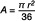
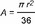

FSBeitrV
Ausfertigungsdatum: 13.05.2004
Vollzitat:
"Frequenzschutzbeitragsverordnung vom 13. Mai 2004 (BGBl. I S. 958), die zuletzt durch Artikel 1 der Verordnung vom 7. Januar 2025 (BGBl. 2025 I Nr. 4) geändert worden ist"
| Stand: | Zuletzt geändert durch Art. 1 V v. 7.1.2025 I Nr. 4 |
(+++ Textnachweis ab: 1.1.2003 +++)
| Nr. | Funkdienst/ Funkanwendung | Nutzergruppen | Bezugseinheit | Jahresbeitrag je Bezugseinheit (in Euro) | |||
|---|---|---|---|---|---|---|---|
| TKG | EMVG | ||||||
| 1 | 2 | 3 | 4 | 5 | 6 | ||
| 1. | Öffentlicher Mobilfunk | ||||||
| 1.1 | D‑, E‑Netze | Netz | 95 802,90 | 25 542,76 | |||
| 1.2 | Bündelfunk | Kanal | 53,15 | 13,20 | |||
| 1.3 | Funkruf | Kanal | 9 655,32 | 0,00 | |||
| 1.4 | Datenfunk | Kanal | 0,00 | 0,00 | |||
| 2. | Rundfunkdienst | ||||||
| 2.1 | Ton-Rundfunk | ||||||
| 2.1.1 | LW | zugeteilte Frequenz | 4 211,19 | 9 871,41 | |||
| 2.1.2 | MW | zugeteilte Frequenz | 788,65 | 654,35 | |||
| 2.1.3 | KW | zugeteilte Frequenz | 106,10 | 95,12 | |||
| Theoretische Versorgungsfläche je zugeteilte Frequenz*) | |||||||
| 2.1.4 | UKW | je angefangene 10 qkm | 2,73 | 0,86 | |||
| 2.1.5 | T‑DAB | je angefangene 10 qkm | 6,22 | 0,05 | |||
| 2.2 | Fernseh-Rundfunk | Fernseh-Rundfunk | je angefangene 10 qkm | 3,14 | 13,55 | ||
| 3. | Feste Funkdienste/ Normalfrequenz‑ und Zeitzeichenfunk | ||||||
| 3.1 | koordinierungspflichtige feste Funkanlagen einschließlich Normalfrequenz‑ und Zeitzeichenfunk | Sendefunkanlage | 15,73 | 1,91 | |||
| 3.2 | nicht koordinierungspflichtige feste Funkanlagen | Sendefunkanlage | 2,40 | 1,33 | |||
| 4. | Nichtöffentlicher Mobiler Landfunk (nömL) | ||||||
| 4.1 | Betriebsfunk auf Gemeinschaftsfrequenzen, Grubenfunk, Bahnfunk, Grundstücks-Sprechfunk, nichtöffentliches Datenfunknetz für Fernwirk‑ und Alarmierungszwecke, Funkanlagen für Hilfszwecke, Fernwirkfunk | Sendefunkanlage | 8,29 | 2,32 | |||
| 4.2 | Betriebsfunk auf Frequenzen, die nicht zur Nutzung als „Gemeinschaftsfrequenzen“ bestimmt sind, einschließlich Betriebsfunk in Bündelfunktechnik | Kanal | 332,80 | 78,33 | |||
| 4.3 | CB‑Funk | Zuteilungsinhaber | 6,63 | 1,55 | |||
| 4.4 | Grundstücks-Personenruf (Netze ohne Quittungssender) | Netz mit ….. Rufempfängern | |||||
| 3,70 | 0,26 | |||||
| 7,50 | 0,55 | |||||
| 15,00 | 1,11 | |||||
| 29,90 | 2,22 | |||||
| 59,80 | 4,44 | |||||
| 119,60 | 8,88 | |||||
| 239,20 | 17,76 | |||||
| 358,70 | 26,64 | |||||
| 4.5 | Grundstücks-Personenruf (Netze mit Quittungssender), grundstücksüberschreitender Personenruf | Netz mit ….. Rufempfängern | |||||
| 4,10 | 0,79 | |||||
| 8,30 | 1,51 | |||||
| 16,60 | 3,03 | |||||
| 33,10 | 6,06 | |||||
| 66,20 | 12,05 | |||||
| 132,40 | 24,16 | |||||
| 198,70 | 36,21 | |||||
| 264,90 | 48,32 | |||||
| 4.6 | Fernsehfunk, bewegbare Kleinst-Richtfunkanlagen, Funkanlagen zur vorübergehenden Einrichtung einer Fernseh‑, Ton‑ und Meldeleitung, vorübergehende Einrichtung einer Bild‑, Ton‑ oder Meldeübertragungsstrecke | Sendefunkanlage | 9,30 | 15,35 | |||
| 4.7 | Durchsagefunk (drahtlose Mikrofone, Führungsfunk, Regie- und Kommandofunk) | Sendefunkanlage | 5,00 | 0,93 | |||
| 4.8 | Mietsprechfunkgerät, Funkanlage zur Fernsteuerung von Modellen, drahtlose Mikrofonanlage für Hörgeschädigte | kein Beitrag | kein Beitrag | ||||
| 5. | Flugfunkdienst | ||||||
| 5.1 | stationäre Bodenfunkstellen, ortsfeste Flugnavigationsfunkstellen | Funkstelle | 8,03 | 78,75 | |||
| 5.2 | übrige Bodenfunkstellen, Luftfunkstellen | Funkstelle | 4,62 | 24,66 | |||
| 6. | Amateurfunkdienst | Amateurfunk | je Zulassung zur Teilnahme am Amateurfunkdienst | 1,18 | 11,40 | ||
| 7. | Seefunkdienst/ Binnenschiff- fahrtsfunk | Seefunk/Binnenschiff- fahrtsfunk | Funkstelle | 15,13 | 1,61 | ||
| 8. | Nichtnavigatorischer Ortungsfunkdienst | Nichtnavigatorischer Ortungsfunk | Sendefunkanlage | 2,08 | 0,14 | ||
| 9. | Sonstige Funkanwendungen | ||||||
| 9.1 | Demonstrationsfunkanlagen | Sendefunkanlage | 1,10 | 0,61 | |||
| 9.2 | Versuchsfunkanlagen | Zuteilung | 1,92 | 13,03 | |||
| 9.3 | WLL/DECT | Sendefunkanlage | 30,00 | 1,45 | |||
 |
| Nr. | Funkdienst/ Funkanwendung | Nutzergruppen | Bezugseinheit | Jahresbeitrag je Bezugseinheit (in Euro) | |||
|---|---|---|---|---|---|---|---|
| TKG | EMVG | ||||||
| 1 | 2 | 3 | 4 | 5 | 6 | ||
| 1. | Öffentlicher Mobilfunk | ||||||
| 1.1 | D‑, E‑Netze | Netz | 117 121,80 | 15 025,39 | |||
| 1.2 | Bündelfunk | Kanal | 27,65 | 21,02 | |||
| 1.3 | Funkruf | Kanal | 9 417,38 | 207,87 | |||
| 1.4 | Datenfunk | Kanal | 0,00 | 0,00 | |||
| 1.5 | UMTS | Netz | 158 312,41 | 2 318,45 | |||
| 2. | Rundfunkdienst | ||||||
| 2.1 | Ton-Rundfunk | ||||||
| 2.1.1 | LW | zugeteilte Frequenz | 2 887,10 | 3 440,04 | |||
| 2.1.2 | MW | zugeteilte Frequenz | 1 125,82 | 764,70 | |||
| 2.1.3 | KW | zugeteilte Frequenz | 151,60 | 99,67 | |||
| Theoretische Versorgungsfläche je zugeteilte Frequenz*) | |||||||
| 2.1.4 | UKW | je angefangene 10 qkm | 2,72 | 0,54 | |||
| 2.1.5 | T‑DAB | je angefangene 10 qkm | 5,50 | 0,05 | |||
| 2.2 | Fernseh-Rundfunk | Fernseh-Rundfunk | je angefangene 10 qkm | 3,70 | 11,42 | ||
| 3. | Feste Funkdienste/Normalfrequenz‑ und Zeitzeichenfunk | ||||||
| 3.1 | koordinierungspflichtige feste Funkanlagen einschließlich Normalfrequenz‑ und Zeitzeichenfunk | Sendefunkanlage | 8,79 | 1,33 | |||
| 3.2 | nicht koordinierungspflichtige feste Funkanlagen | Sendefunkanlage | 3,80 | 0,00 | |||
| 4. | Nichtöffentlicher Mobiler Landfunk (nömL) | ||||||
| 4.1 | Betriebsfunk auf Gemeinschaftsfrequenzen, Grubenfunk, Bahnfunk, Grundstücks-Sprechfunk, nichtöffentliches Datenfunknetz für Fernwirk‑ und Alarmierungszwecke, Funkanlagen für Hilfszwecke, Fernwirkfunk | Sendefunkanlage | 10,18 | 1,95 | |||
| 4.2 | Betriebsfunk auf Frequenzen, die nicht zur Nutzung als „Gemeinschaftsfrequenzen“ bestimmt sind, einschließlich Betriebsfunk in Bündelfunktechnik | Kanal | 125,09 | 57,88 | |||
| 4.3 | CB‑Funk | Zuteilungsinhaber | 13,80 | 1,67 | |||
| 4.4 | Grundstücks-Personenruf (Netze ohne Quittungssender) | Netz mit ….. Rufempfängern | |||||
| 4,10 | 0,27 | |||||
| 8,20 | 0,60 | |||||
| 16,40 | 1,20 | |||||
| 32,80 | 2,33 | |||||
| 65,60 | 4,73 | |||||
| 131,30 | 9,40 | |||||
| 262,60 | 18,87 | |||||
| 393,80 | 28,27 | |||||
| 4.5 | Grundstücks-Personenruf (Netze mit Quittungssender), grundstücksüberschreitender Personenruf | Netz mit ….. Rufempfängern | |||||
| 5,30 | 0,87 | |||||
| 10,60 | 1,67 | |||||
| 21,10 | 3,40 | |||||
| 42,20 | 6,73 | |||||
| 84,50 | 13,47 | |||||
| 169,00 | 26,93 | |||||
| 253,50 | 40,40 | |||||
| 338,00 | 53,87 | |||||
| 4.6 | Fernsehfunk, bewegbare Kleinst-Richtfunkanlagen, Funkanlagen zur vorübergehenden Einrichtung einer Fernseh‑, Ton‑ und Meldeleitung, vorübergehende Einrichtung einer Bild‑, Ton‑ oder Meldeübertragungsstrecke | Sendefunkanlage | 32,50 | 13,87 | |||
| 4.7 | Durchsagefunk (drahtlose Mikrofone, Führungsfunk, Regie‑ und Kommandofunk) | Sendefunkanlage | 6,40 | 0,87 | |||
| 4.8 | Mietsprechfunkgerät, Funkanlage zur Fernsteuerung von Modellen, drahtlose Mikrofonanlage für Hörgeschädigte | kein Beitrag | kein Beitrag | ||||
| 5. | Flugfunkdienst | ||||||
| 5.1 | stationäre Bodenfunkstellen, ortsfeste Flugnavigationsfunkstellen | Funkstelle | 62,16 | 72,87 | |||
| 5.2 | übrige Bodenfunkstellen, Luftfunkstellen | Funkstelle | 7,51 | 24,47 | |||
| 6. | Amateurfunkdienst | Amateurfunk | je Zulassung zur Teilnahme am Amateurfunkdienst | 2,90 | 12,60 | ||
| 7. | Seefunkdienst/ Binnenschiff- fahrtsfunk | Seefunk/Binnenschiff- fahrtsfunk | Funkstelle | 18,30 | 2,52 | ||
| 8. | Nichtnavigatorischer Ortungsfunkdienst | Nichtnavigatorischer Ortungsfunk | Sendefunkanlage | 3,50 | 2,07 | ||
| 9. | Sonstige Funkanwendungen | ||||||
| 9.1 | Demonstrationsfunkanlagen | Sendefunkanlage | 0,71 | 0,38 | |||
| 9.2 | Versuchsfunkanlagen | Zuteilung | 2,40 | 13,13 | |||
| 9.3 | WLL/DECT | Sendefunkanlage | 48,78 | 2,53 | |||
|
| Nr. | Funkdienst/ Funkanwendung | Nutzergruppen | Bezugseinheit | Jahresbeitrag je Bezugseinheit (in Euro) | |||
|---|---|---|---|---|---|---|---|
| TKG | EMVG | ||||||
| 1 | 2 | 3 | 4 | 5 | 6 | ||
| 1. | Öffentlicher Mobilfunk | ||||||
| 1.1 | GSM | Netz | 102 647,40 | 18 879,22 | |||
| 1.2 | Bündelfunk | Kanal | 37,99 | 11,69 | |||
| 1.3 | Funkruf | Kanal | 6 227,31 | 0,00 | |||
| 1.4 | (entfällt) | ||||||
| 1.5 | UMTS | Netz | 112 110,93 | 1 869,961) | |||
| 2. | Rundfunkdienst | ||||||
| 2.1 | Ton-Rundfunk | ||||||
| 2.1.1 | LW | zugeteilte Frequenz | 733,15 | 11 141,561) | |||
| 2.1.2 | MW | zugeteilte Frequenz | 1 953,83 | 1 082,121) | |||
| 2.1.3 | KW | zugeteilte Frequenz | 145,29 | 75,18 | |||
| 2.1.4 | Rundfunk auf digitale MW | zugeteilte Frequenz | 7 525,701) | 0,00 | |||
| 2.1.5 | Nichtöffentliche Funkanlagen im UKW Rundfunkbereich | zugeteilte Frequenz | 115,632) | 5,692) | |||
| Theoretische Versorgungsfläche je zuget. Frequenz*) | |||||||
| 2.1.6 | UKW | je angefangene 10 qkm | 2,58 | 0,53 | |||
| 2.1.7 | T‑DAB | je angefangene 10 qkm | 4,71 | 0,04 | |||
| 2.2 | Fernseh-Rundfunk | Fernseh-Rundfunk | je angefangene 10 qkm | 3,57 | 8,81 | ||
| 2.2.1 | DVB‑T | je angefangene 10 qkm | 16,09 | 2,27 | |||
| 3. | Feste Funkdienste/ Normalfrequenz- und Zeitzeichenfunkdienst | ||||||
| 3.1 | koordinierungspflichtige feste Funkanlagen einschließlich Normalfrequenz‑ und Zeitzeichenfunk | Sendefunkanlage | 4,45 | 1,01 | |||
| 3.2 | andere nicht koordinierungsrelevante feste Funkanlagen | Sendefunkanlage | 15,601) | 1,931) | |||
| 4. | Nichtöffentlicher Mobiler Landfunk (nömL) | ||||||
| 4.1 | Betriebsfunk auf Gemeinschaftsfrequenzen, Grubenfunk, Bahnfunk, Grundstücks-Sprechfunk, nichtöffentliches Datenfunknetz für Fernwirk‑ und Alarmierungszwecke, Funkanlagen für Hilfszwecke, Fernwirkfunk | Sendefunkanlage | 10,701) | 2,06 | |||
| 4.2 | Betriebsfunk auf Frequenzen, die nicht zur Nutzung als „Gemeinschaftsfrequenzen“ bestimmt sind, einschließlich Betriebsfunk in Bündelfunktechnik | Kanal | 99,38 | 21,02 | |||
| 4.3 | CB - Funk | Zuteilungsinhaber | 11,701) | 1,531) | |||
| 4.4 | Grundstücks-Personenruf (Netze ohne Quittungssender) | Netz mit ….. Rufempfängern | |||||
| 3,64 | 0,10 | |||||
| 7,28 | 0,19 | |||||
| 14,56 | 0,39 | |||||
| 29,13 | 0,78 | |||||
| 58,26 | 1,56 | |||||
| 116,51 | 3,12 | |||||
| 233,02 | 6,24 | |||||
| 349,53 | 9,36 | |||||
| 4.5 | Grundstücks-Personenruf (Netze mit Quittungssender) Grundstücksüberschreitender Personenruf | Netz mit ….. Rufempfängern | |||||
| 6,501) | 0,91 | |||||
| 13,001) | 1,81 | |||||
| 26,001) | 3,61 | |||||
| 52,001) | 7,23 | |||||
| 103,001) | 14,47 | |||||
| 207,901) | 28,93 | |||||
| 311,901) | 43,40 | |||||
| 415,901) | 57,87 | |||||
| 4.6 | Fernsehfunk, bewegbare Kleinst-Richtfunkanlagen, Funkanlagen zur vorübergehenden Einrichtung einer Fernseh‑, Ton‑ und Meldeleitung, vorübergehende Einrichtung einer Bild‑, Ton‑ oder Meldeübertragungsstrecke | Sendefunkanlage | 10,56 | 12,59 | |||
| 4.7 | Durchsagefunk (drahtlose Mikrofone, Führungsfunk, Regie- und Kommandofunk) | Sendefunkanlage | 4,66 | 0,54 | |||
| 4.8 | Funkanlage zur Fernsteuerung von Modellen, drahtlose Mikrofonanlage für Hörgeschädigte | kein Beitrag | kein Beitrag | ||||
| 5. | Flugfunkdienst | ||||||
| 5.1 | stationäre Bodenfunkstellen, ortsfeste Flugnavigationsfunkstellen | Funkstelle | 26,101) | 67,14 | |||
| 5.2 | übrige Bodenfunkstellen, Luftfunkstellen | Funkstelle | 7,701) | 29,78 | |||
| 6. | Amateurfunkdienst | Amateurfunk | je Zulassung zur Teilnahme am Amateurfunkdienst | 2,401) | 12,601) | ||
| 7. | Seefunkdienst/ Binnenschiff- fahrtsfunk | Seefunk/Binnenschiff- fahrtsfunk | Funkstelle | 13,71 | 1,45 | ||
| 8. | Nichtnavigatorischer Ortungsfunkdienst | Nichtnavigatorischer Ortungsfunk | Sendefunkanlage | 0,85 | 0,41 | ||
| 9. | sonstige Funkanwendungen | ||||||
| 9.1 | Demonstrationsfunkanlagen | Sendefunkanlage | 0,08 | 0,06 | |||
| 9.2 | Versuchsfunkanlagen | Zuteilung | 0,00 | 14,601) | |||
| 9.3 | WLL/DECT | Sendefunkanlage | 63,58 | 0,41 | |||
 |
| Nr. | Funkdienst/ Funkanwendung | Nutzergruppen | Bezugseinheit | Jahresbeitrag je Bezugseinheit (in Euro) | |||
|---|---|---|---|---|---|---|---|
| TKG | EMVG | ||||||
| 1 | 2 | 3 | 4 | 5 | 6 | ||
| 1. | Öffentlicher Mobilfunk | ||||||
| 1.1 | GSM | Netz | 241 516,15 | 9 126,98 | |||
| 1.2 | Bündelfunk | ||||||
| 1.2.1 | Bündelfunk (schmalbandig, bis 25 kHz Bandbreite) | Pro Sektor und Frequenzpaar (Referenzbandbreite 12,5 kHz) | 25,99 | 6,10 | |||
| 1.2.2 | Bündelfunk (weitbandig, größer 25 kHz Bandbreite) | Pro Sektor und Frequenzpaar (Referenzbandbreite 12,5 kHz) | 9,37 | 0,30 | |||
| 1.3 | Funkruf | Kanal | 5 339,27 | 1 009,61 | |||
| 1.4 | (entfällt) | ||||||
| 1.5 | UMTS | Netz | 178 402,41 | 94 095,63 | |||
| 2. | Rundfunkdienst | ||||||
| 2.1 | Ton-Rundfunk | ||||||
| 2.1.1 | LW | zugeteilte Frequenz | 3 876,55 | 10 290,30 | |||
| 2.1.2 | MW | zugeteilte Frequenz | 1 065,53 | 1 111,50 | |||
| 2.1.3 | KW | zugeteilte Frequenz | 75,09 | 81,49 | |||
| 2.1.4 | digitale MW | zugeteilte Frequenz | 6 432,40 | 730,62 | |||
| 2.1.5 | digitale KW | zugeteilte Frequenz | 161,02 | 219,23 | |||
| 2.1.6 | digitale LW | zugeteilte Frequenz | 29 451,75 | 336,31 | |||
| 2.1.7 | Nichtöffentliche Funkanlagen im UKW Rundfunkbereich | zugeteilte Frequenz | 159,31 | 39,17 | |||
| Theoretische Versorgungsfläche je zuget. Frequenz*) | |||||||
| 2.1.8 | UKW | je angefangene 10 qkm | 1,39 | 0,62 | |||
| 2.1.9 | T‑DAB | je angefangene 10 qkm | 7,82 | 0,07 | |||
| 2.2 | Fernseh-Rundfunk | ||||||
| 2.2.1 | Fernseh-Rundfunk | je angefangene 10 qkm | 6,16 | 10,85 | |||
| 2.2.2 | DVB‑T | je angefangene 10 qkm | 11,26 | 2,40 | |||
| 3. | Feste Funkdienste/Normalfrequenz‑ und Zeitzeichenfunk | ||||||
| 3.1 | koordinierungspflichtige feste Funk-Anlagen (P/P-Richtfunk, P/M-Richtfunk), WLL | Sendefunkanlage | 7,97 | 0,72 | |||
| 3.2 | Koordinierungsrelevante Satellitenfunkverbindungen | zugeteilte Frequenz | 31,84 | 110,07 | |||
| 3.3 | gebietsbezogene Richtfunkzuteilungen | Sendefunkanlage | 4,61 | 0,00 | |||
| 3.4 | fester Funkdienst auf Kurz‑ und Langwelle, einschließlich Normalfrequenz‑ und Zeitzeichenfunk | zugeteilte Frequenz | 49,86 | 21,99 | |||
| 3.5 | nicht koordinierungspflichtige feste Funkanlagen | zugeteilte Frequenz | 76,27 | 36,67 | |||
| 4. | Nichtöffentlicher Mobiler Landfunk (nömL) | ||||||
| 4.1 | Betriebsfunk auf Gemeinschaftsfrequenzen, Grubenfunk, Grundstücks-Sprechfunk, nichtöffentliches Datenfunknetz für Fernwirk‑ und Alarmierungszwecke, Funkanlagen für Hilfszwecke, Fernwirk-Funkanlagen | Sendefunkanlage | 11,59 | 1,97 | |||
| 4.2 | Betriebsfunk auf Frequenzen, die nicht zur Nutzung als „Gemeinschaftsfrequenzen“ bestimmt sind, einschließlich Betriebsfunk in Bündelfunktechnik | Pro Sektor und Frequenzpaar (Referenzbandbreite 12,5 kHz) | 53,50 | 10,91 | |||
| 4.3 | (entfällt) | ||||||
| 4.4 | Grundstücks-Personenruf (Netze ohne Quittungssender) | Netz mit ….. Rufempfängern | |||||
| 4,23 | 0,42 | |||||
| 8,47 | 0,85 | |||||
| 16,93 | 1,70 | |||||
| 33,87 | 3,40 | |||||
| 67,74 | 6,80 | |||||
| 135,47 | 13,59 | |||||
| 270,95 | 27,18 | |||||
| 406,42 | 40,77 | |||||
| 4.5 | Grundstücks-Personenruf (Netze mit Quittungssender) | Netz mit ….. Rufempfängern | |||||
| 5,49 | 0,37 | |||||
| 10,98 | 0,75 | |||||
| 21,96 | 1,49 | |||||
| 43,92 | 2,99 | |||||
| 87,85 | 5,97 | |||||
| 175,69 | 11,94 | |||||
| 263,54 | 17,91 | |||||
| 351,39 | 23,88 | |||||
| 4.6 | Grundstücksüberschreitender Personenruf | Netz mit ….. Rufempfängern | |||||
| 27,29 | 0,78 | |||||
| 54,59 | 1,55 | |||||
| 109,17 | 3,11 | |||||
| 218,35 | 6,21 | |||||
| 436,69 | 12,42 | |||||
| 873,39 | 24,84 | |||||
| 1 310,08 | 37,26 | |||||
| 4.7 | Fernsehfunk, bewegbare Kleinst-Richtfunkanlagen, Funkanlagen zur vorübergehenden Einrichtung einer Fernseh‑, Ton‑ und Meldeleitung, vorübergehende Einrichtung einer Bild‑, Ton‑ oder Meldeübertragungsstrecke | Sendefunkanlage | 17,26 | 14,48 | |||
| 4.8 | Durchsagefunk (drahtlose Mikrofone, Führungsfunk, Regie‑ und Kommandofunk) | Sendefunkanlage | 9,87 | 0,99 | |||
| 4.9 | Funkanlage zur Fernsteuerung von Modellen, drahtlose Mikrofonanlage für Hörgeschädigte | kein Beitrag | kein Beitrag | ||||
| 5. | Flugfunkdienst | ||||||
| 5.1 | stationäre Bodenfunkstellen, ortsfeste Flugnavigationsfunkstellen | Funkstelle | 76,20 | 62,57 | |||
| 5.2 | mobiler Flugfunk (Luftfunkstellen), Flugnavigationsfunk (bewegliche Funkstellen) | Funkstelle | 14,44 | 20,65 | |||
| 5.3 | mobiler Flugfunk (sonstige Bodenfunkstellen) | Funkstelle | 2,01 | 21,27 | |||
| 6. | Amateurfunkdienst | Amateurfunk | je Zulassung zur Teilnahme am Amateurfunkdienst | 3,41 | 11,09 | ||
| 7. | Seefunkdienst/ Binnenschiff- fahrtsfunk | Seefunk/Binnenschiff- fahrtsfunk | Funkstelle | 17,40 | 1,09 | ||
| 8. | Nichtnavigatorischer Ortungsfunkdienst | ||||||
| 8.1 | Nichtnavigatorischer Ortungsfunk kleiner Leistung (bis 50 Watt Strahlungsleistung (ERP)), Wetterhilfenfunk | Sendefunkanlage | 0,60 | 2,55 | |||
| 8.2 | Nichtnavigatorischer Ortungsfunk hoher Leistung (größer 50 Watt Strahlungsleistung (ERP)) | Sendefunkanlage | 80,18 | 41,60 | |||
| 9. | sonstige Funkanwendungen | ||||||
| 9.1 | Demonstrationsfunkanlagen | Sendefunkanlage | 1,00 | 0,00 | |||
| 9.2 | Versuchsfunkanlagen | Zuteilung | 2,91 | 5,02 | |||
| 9.3 | Satellitenfunknetz | Frequenz | 1 039,84 | 155,41 | |||
| 9.4 | bei der internationalen Fernmeldeunion in deutschem Namen registrierte Satellitensysteme (nach Übertragung der Nutzungsrechte) | Satellitensystem | 22 322,82 | 0,00 | |||
| 10. | Bahnfunk | ||||||
| 10.1 | Analoger Eisenbahn- Betriebsfunk | Sendefunkanlage | 12,30 | 0,86 | |||
| 10.2 | Digitaler Eisenbahn- Betriebsfunk | Pro Sektor und Frequenzpaar | 35,97 | 0,78 | |||
 |
| Nr. | Funkdienst/ Funkanwendung | Nutzergruppen | Bezugseinheit | Jahresbeitrag je Bezugseinheit (in Euro) | |||
|---|---|---|---|---|---|---|---|
| TKG | EMVG | ||||||
| 1 | 2 | 3 | 4 | 5 | 6 | ||
| 1. | Öffentlicher Mobilfunk | ||||||
| 1.1 | GSM | Netz | 213 666,46 | 12 555,00 | |||
| 1.2 | Bündelfunk | ||||||
| 1.2.1 | Bündelfunk (schmalbandig, bis 25 kHz Bandbreite) | Pro Sektor und Frequenzpaar (Referenzbandbreite 12,5 kHz) | 98,68 | 7,44 | |||
| 1.2.2 | Bündelfunk (weitbandig, größer 25 kHz Bandbreite) | Pro Sektor und Frequenzpaar (Referenzbandbreite 12,5 kHz) | 3,27 | 0,13 | |||
| 1.3 | Funkruf | Kanal | 8 118,42 | 0,00 | |||
| 1.4 | (entfällt) | ||||||
| 1.5 | UMTS | Netz | 124 425,41 | 133 927,71 | |||
| 2. | Rundfunkdienst | ||||||
| 2.1 | Ton-Rundfunk | ||||||
| 2.1.1 | LW | zugeteilte Frequenz | 5 759,51 | 10 433,47 | |||
| 2.1.2 | MW | zugeteilte Frequenz | 1 915,66 | 1 135,57 | |||
| 2.1.3 | KW | zugeteilte Frequenz | 61,60 | 39,51 | |||
| 2.1.4 | digitale MW | zugeteilte Frequenz | 5 961,34 | 836,97 | |||
| 2.1.5 | digitale LW | zugeteilte Frequenz | 37 362,65 | 5 653,56 | |||
| 2.1.6 | digitale KW | zugeteilte Frequenz | 0,00 | 37,55 | |||
| 2.1.7 | Nichtöffentliche Funkanlagen im UKW Rundfunkbereich | zugeteilte Frequenz | 32,21 | 9,15 | |||
| Theoretische Versorgungsfläche je zuget. Frequenz*) | |||||||
| 2.1.8 | UKW | je angefangene 10 qkm | 1,58 | 0,56 | |||
| 2.1.9 | T‑DAB | je angefangene 10 qkm | 6,37 | 0,17 | |||
| 2.2 | Fernseh-Rundfunk | ||||||
| 2.2.1 | Fernseh-Rundfunk | je angefangene 10 qkm | 5,94 | 11,75 | |||
| 2.2.2 | DVB‑T | je angefangene 10 qkm | 9,06 | 1,93 | |||
| 3. | Feste Funkdienste/Normalfrequenz‑ und Zeitzeichenfunk | ||||||
| 3.1 | koordinierungspflichtige feste Funkanlagen (P/P-Richtfunk, P/M-Richtfunk), WLL | Sendefunkanlage | 3,59 | 0,40 | |||
| 3.2 | Koordinierungsrelevante Satellitenfunkverbindung | zugeteilte Frequenz | 98,39 | 106,00 | |||
| 3.3 | gebietsbezogene Richtfunkzuteilungen | Sendefunkanlage | 0,00 | 0,00 | |||
| 3.4 | fester Funkdienst auf Kurz‑ und Langwelle, einschließlich Normalfrequenz‑ und Zeitzeichenfunk | zugeteilte Frequenz | 59,92 | 17,90 | |||
| 3.5 | nicht koordinierungspflichtige feste Funkanlagen | zugeteilte Frequenz | 70,92 | 88,27 | |||
| 4. | Nichtöffentlicher Mobiler Landfunk (nömL) | ||||||
| 4.1 | Betriebsfunk auf Gemeinschaftsfrequenzen, Grubenfunk, Grundstücks-Sprechfunk, nichtöffentliches Datenfunknetz für Fernwirk‑ und Alarmierungszwecke, Funkanlagen für Hilfszwecke, Fernwirkfunk | Sendefunkanlage | 11,96 | 1,59 | |||
| 4.2 | Betriebsfunk auf Frequenzen, die nicht zur Nutzung als „Gemeinschaftsfrequenzen“ bestimmt sind, einschließlich Betriebsfunk in Bündelfunktechnik | Pro Sektor und Frequenzpaar (Referenzbandbreite 12,5 kHz) | 73,43 | 4,46 | |||
| 4.3 | (entfällt) | ||||||
| 4.4 | Grundstücks-Personenruf (Netze ohne Quittungssender) | Netz mit ….. Rufempfängern | |||||
| 2,76 | 0,10 | |||||
| 5,51 | 0,20 | |||||
| 11,02 | 0,40 | |||||
| 22,05 | 0,79 | |||||
| 44,10 | 1,59 | |||||
| 88,20 | 3,18 | |||||
| 176,39 | 6,35 | |||||
| 264,59 | 9,53 | |||||
| 4.5 | Grundstücks-Personenruf (Netze mit Quittungssender) | Netz mit ….. Rufempfängern | |||||
| 4,52 | 0,19 | |||||
| 9,04 | 0,38 | |||||
| 18,07 | 0,75 | |||||
| 36,14 | 1,50 | |||||
| 72,29 | 3,00 | |||||
| 144,57 | 6,00 | |||||
| 216,86 | 9,01 | |||||
| 289,14 | 12,01 | |||||
| 4.6 | Grundstücksüberschreitender Personenruf | Netz mit ….. Rufempfängern | |||||
| 18,24 | 0,00 | |||||
| 36,48 | 0,00 | |||||
| 72,95 | 0,00 | |||||
| 145,91 | 0,00 | |||||
| 291,82 | 0,00 | |||||
| 583,64 | 0,00 | |||||
| 875,46 | 0,00 | |||||
| 4.7 | Fernsehfunk, bewegbare Kleinst-Richtfunkanlagen, Funkanlagen zur vorübergehenden Einrichtung einer Fernseh‑, Ton‑ und Meldeleitung, vorübergehende Einrichtung einer Bild‑, Ton‑ oder Meldeübertragungsstrecke | Sendefunkanlage | 10,48 | 11,27 | |||
| 4.8 | Durchsagefunk (drahtlose Mikrofone, Führungsfunk, Regie- und Kommandofunk) | Sendefunkanlage | 7,78 | 0,55 | |||
| 4.9 | Funkanlage zur Fernsteuerung von Modellen, drahtlose Mikrofonanlage für Hörgeschädigte | kein Beitrag | kein Beitrag | ||||
| 5. | Flugfunkdienst | ||||||
| 5.1 | stationäre Bodenfunkstellen, ortsfeste Flugnavigationsfunkstellen | Funkstelle | 270,17 | 91,92 | |||
| 5.2 | mobiler Flugfunk (Luftfunkstellen), Flugnavigationsfunk (bewegliche Funkstellen) | Funkstelle | 15,98 | 15,36 | |||
| 5.3 | mobiler Flugfunk (sonstige Bodenfunkstellen) | Funkstelle | 0,00 | 4,34 | |||
| 6. | Amateurfunkdienst | Amateurfunk | je Zulassung zur Teilnahme am Amateurfunkdienst | 6,55 | 10,77 | ||
| 7. | Seefunkdienst/ Binnenschiff- fahrtsfunk | Seefunk/Binnenschiff- fahrtsfunk | Funkstelle | 17,33 | 1,40 | ||
| 8. | Nichtnavigatorischer Ortungsfunkdienst | ||||||
| 8.1 | Nichtnavigatorischer Ortungsfunk kleiner Leistung (bis 50 Watt Strahlungsleistung (ERP)), Wetterhilfenfunk | Sendefunkanlage | 0,15 | 0,60 | |||
| 8.2 | Nichtnavigatorischer Ortungsfunk hoher Leistung (größer als 50 Watt Strahlungsleistung (ERP)) | Sendefunkanlage | 5,96 | 44,55 | |||
| 9. | sonstige Funkanwendungen | ||||||
| 9.1 | Demonstrationsfunkanlagen | Sendefunkanlage | 9,54 | 0,00 | |||
| 9.2 | Versuchsfunkanlagen | Zuteilung | 4,62 | 1,84 | |||
| 9.3 | Satellitenfunknetz | Frequenz | 686,05 | 352,04 | |||
| 9.4 | Bei der internationalen Fernmeldeunion in deutschem Namen registrierte Satellitensysteme (nach Übertragung der Nutzungsrechte) | Satellitensystem | 7 440,68 | 0,00 | |||
| 10. | Bahnfunk | ||||||
| 10.1 | Analoger Eisenbahn- Betriebsfunk (ortsfeste Frequenznutzung) | Sendefunkanlage | 34,36 | 2,13 | |||
| 10.2 | Analoger Eisenbahn- Betriebsfunk (mobile Frequenznutzung) | Sendefunkanlage | 7,95 | 1,81 | |||
| 10.3 | Digitaler Eisenbahn- Betriebsfunk | Pro Sektor und Frequenzpaar | 31,53 | 2,85 | |||
| Nr. | Funkdienst/ Funkanwendung | Nutzergruppen | Bezugseinheit | Jahresbeitrag je Bezugseinheit (in Euro) | |||
|---|---|---|---|---|---|---|---|
| TKG | EMVG | ||||||
| 1 | 2 | 3 | 4 | 5 | 6 | ||
| 1. | Öffentlicher Mobilfunk | ||||||
| 1.1 | GSM | Netz | 380 277,98 | 10 923,09 | |||
| 1.2 | (entfällt) | ||||||
| 1.3 | Funkruf | Frequenz | 43 817,79 | 0,00 | |||
| 1.4 | (entfällt) | ||||||
| 1.5 | UMTS | Netz | 196 761,81 | 144 072,71 | |||
| 2. | Rundfunkdienst | ||||||
| 2.1 | Ton-Rundfunk | ||||||
| 2.1.1 | LW | Frequenz | 4 791,65 | 16 795,95 | |||
| 2.1.2 | MW | Frequenz | 951,17 | 3 151,19 | |||
| 2.1.3 | KW | Frequenz | 20,76 | 65,07 | |||
| 2.1.4 | digitale MW | Frequenz | 4 915,19 | 254,10 | |||
| 2.1.5 | digitale LW | Frequenz | 33 397,35 | 0,00 | |||
| 2.1.6 | digitale KW | Frequenz | 0,00 | 125,74 | |||
| 2.1.7 | Nichtöffentliche Funkanlagen im UKW-Rundfunkbereich | Frequenz | 89,80 | 5,84 | |||
| Theoretische Versorgungsfläche je zugeteilte Frequenz*) | |||||||
| 2.1.8 | UKW | je angefangene 10 km² | 1,26 | 0,68 | |||
| 2.1.9 | T‑DAB | je angefangene 10 km² | 4,67 | 0,10 | |||
| 2.2 | Fernseh-Rundfunk | ||||||
| 2.2.1 | Fernseh-Rundfunk | je angefangene 10 km² | 4,84 | 26,73 | |||
| 2.2.2 | DVB‑T | je angefangene 10 km² | 4,42 | 1,90 | |||
| 3. | Feste Funkdienste/Normalfrequenz‑ und Zeitzeichenfunk | ||||||
| 3.1 | Punkt-zu-Punkt-Richtfunk | Sendefunkanlage | 1,48 | 0,25 | |||
| 3.2 | WLL-PMP-Richtfunk | Sendefunkanlage | 41,62 | 0,00 | |||
| 3.3 | gebietsbezogene Richtfunkzuteilungen | Sendefunkanlage | 65,30 | 0,16 | |||
| 3.4 | fester Funkdienst unter 30 MHz, Normalfrequenz‑ und Zeitzeichenfunk | Frequenz | 52,90 | 22,61 | |||
| 3.5 | Punkt-zu-Mehrpunkt-Richtfunk (außer WLL-PMP-Richtfunk) | Sendefunkanlage | 34,47 | 0,92 | |||
| 4. | Nichtöffentlicher mobiler Landfunk (nömL) | ||||||
| 4.1 | Betriebsfunk, Grubenfunk, Grundstücks-Sprechfunk, nichtöffentliches Datenfunknetz für Fernwirk‑ und Alarmierungszwecke, Funkanlagen für Hilfszwecke, Fernwirkfunk | Sendefunkanlage | 4,01 | 1,64 | |||
| 4.2 | (entfällt) | ||||||
| 4.3 | (entfällt) | ||||||
| 4.4 | Grundstücks-Personenruf (Netze ohne Quittungssender) | Netz mit …… Rufempfängern | |||||
| 4,19 | 0,14 | |||||
| 8,39 | 0,27 | |||||
| 16,77 | 0,55 | |||||
| 33,54 | 1,09 | |||||
| 67,08 | 2,18 | |||||
| 134,16 | 4,37 | |||||
| 268,32 | 8,73 | |||||
| 402,49 | 13,10 | |||||
| 4.5 | Grundstücks-Personenruf (Netze mit Quittungssender) | Netz mit …… Rufempfängern | |||||
| 6,06 | 0,41 | |||||
| 12,12 | 0,82 | |||||
| 24,24 | 1,64 | |||||
| 48,48 | 3,29 | |||||
| 96,96 | 6,57 | |||||
| 193,91 | 13,15 | |||||
| 290,87 | 19,72 | |||||
| 387,83 | 26,29 | |||||
| 4.6 | grundstücksüberschreitender Personenruf | Netz mit …… Rufempfängern | |||||
| 29,94 | 0,00 | |||||
| 59,88 | 0,00 | |||||
| 119,77 | 0,00 | |||||
| 239,53 | 0,00 | |||||
| 479,06 | 0,00 | |||||
| 958,12 | 0,00 | |||||
| 1 437,18 | 0,00 | |||||
| 4.7 | Fernsehfunk, bewegbare Kleinst-Richtfunkanlagen, Funkanlagen zur vorübergehenden Einrichtung einer Fernseh‑, Ton‑ oder Meldeleitung, vorübergehende Einrichtung einer Bild‑, Ton‑ oder Meldeübertragungsstrecke | Sendefunkanlage | 5,28 | 9,56 | |||
| 4.8 | Durchsagefunk (Funkmikrofone, drahtlose Mikrofone, Führungsfunk, Betriebsfunk für Führungszwecke, Regie‑ und Kommandofunk), Regiefunk des Reportagefunks | Sendefunkanlage | 15,58 | 0,60 | |||
| 4.9 | Funkanlage zur Fernsteuerung von Modellen, drahtlose Mikrofonanlage für Hörgeschädigte | kein Beitrag | kein Beitrag | ||||
| 5. | Flugfunkdienst | ||||||
| 5.1 | stationäre Bodenfunkstellen, ortsfeste Flugnavigationsfunkstellen | Funkstelle | 511,58 | 90,35 | |||
| 5.2 | mobiler Flugfunk (Luftfunkstellen), Flugnavigationsfunk (bewegliche Funkstellen) | Funkstelle | 9,98 | 19,02 | |||
| 5.3 | mobiler Flugfunk (sonstige Bodenfunkstellen) | Funkstelle | 0,00 | 20,84 | |||
| 6. | Amateurfunkdienst | Amateurfunk | Inhaber einer Zulassung zur Teilnahme am Amateurfunkdienst | 4,39 | 15,21 | ||
| 7. | Seefunkdienst/ Binnenschiff- fahrtsfunk | Seefunk/Binnenschiff- fahrtsfunk | Funkstelle | 22,66 | 1,04 | ||
| 8. | Nichtnavigatorischer Ortungsfunkdienst | ||||||
| 8.1 | nichtnavigatorischer Ortungsfunk kleiner Leistung (bis 50 Watt Strahlungsleistung (ERP)), Wetterhilfenfunk | Sendefunkanlage | 0,26 | 0,59 | |||
| 8.2 | nichtnavigatorischer Ortungsfunk hoher Leistung (größer als 50 Watt Strahlungsleistung (ERP)) | Sendefunkanlage | 80,76 | 0,00 | |||
| 9. | Sonstige Funkanwendungen | ||||||
| 9.1 | Demonstrationsfunk | Sendefunkanlage | 1,76 | 13,22 | |||
| 9.2 | Versuchsfunk | Zuteilung | 0,00 | 14,35 | |||
| 10. | Bahnfunk | ||||||
| 10.1 | analoger Eisenbahn- Betriebsfunk (ortsfeste Frequenznutzung) | Sendefunkanlage | 51,63 | 2,77 | |||
| 10.2 | analoger Eisenbahn- Betriebsfunk (mobile Frequenznutzung) | Sendefunkanlage | 7,11 | 2,15 | |||
| 10.3 | digitaler Eisenbahn- Betriebsfunk in GSM‑R-Technik | pro Sektor und Frequenzpaar | 53,85 | 20,44 | |||
| 11. | Bündelfunk | ||||||
| 11.1 | Bündelfunk (bis 25 kHz Bandbreite) | pro Sektor und Frequenzpaar je 12,5 kHz Bandbreite oder pro Frequenz im Direct-Mode-Betrieb je 12,5 kHz Bandbreite | 80,04 | 9,45 | |||
| 11.2 | Bündelfunk (größer als 25 kHz Bandbreite) | pro Sektor und Frequenzpaar je 12,5 kHz Bandbreite | 2,13 | 0,00 | |||
| 12. | Satellitenfunk | ||||||
| 12.1 | koordinierungsrelevante Satellitenfunkverbindung | Frequenz | 650,18 | 33,30 | |||
| 12.2 | nicht koordinierungsrelevante Satellitenfunkverbindung | Frequenz | 53,84 | 0,77 | |||
| 12.3 | Satellitenfunknetz | Frequenz | 545,88 | 114,12 | |||
| 12.4 | Bei der internationalen Fernmeldeunion in deutschem Namen registrierte Satellitensysteme (nach Übertragung der Nutzungsrechte) | Satellitensystem | 9 489,57 | 0,00 | |||
 |
| Neue Nutzergruppen gemäß § 1 Absatz 2 Satz 4 | Jahr der ersten Frequenzzuteilung |
|---|---|
| drahtloser Netzzugang im Frequenzbereich 450 MHz | 2010 |
| drahtloser Netzzugang im Frequenzbereich 800 MHz | 2010 |
| drahtloser Netzzugang im Frequenzbereich 900 MHz | 2010 |
| drahtloser Netzzugang im Frequenzbereich 1,8 GHz | 2010 |
| drahtloser Netzzugang im Frequenzbereich 2,0 GHz | 2010 |
| drahtloser Netzzugang im Frequenzbereich 2,6 GHz | 2010 |
| drahtloser Netzzugang im Frequenzbereich 3,5 GHz | 2010 |
| Nr. | Funkdienst/ Funkanwendung | Nutzergruppen | Bezugseinheit | Jahresbeitrag je Bezugseinheit (in Euro) | |||
|---|---|---|---|---|---|---|---|
| TKG | EMVG | ||||||
| 1 | 2 | 3 | 4 | 5 | 6 | ||
| 1. | Öffentlicher Mobilfunk | ||||||
| 1.1 | GSM | Netz | 678 773,56 | 27 207,62 | |||
| 1.2 | (entfällt) | ||||||
| 1.3 | Funkruf | Frequenz | 95 543,87 | 0,00 | |||
| 1.4 | (entfällt) | ||||||
| 1.5 | UMTS | Netz | 188 166,64 | 186 043,60 | |||
| 2. | Rundfunkdienst | ||||||
| 2.1 | Ton-Rundfunk | ||||||
| 2.1.1 | LW | Frequenz | 4 951,72 | 24 813,40 | |||
| 2.1.2 | MW | Frequenz | 2 179,91 | 2 453,69 | |||
| 2.1.3 | KW | Frequenz | 42,23 | 89,92 | |||
| 2.1.4 | digitale MW | Frequenz | 5 970,30 | 623,55 | |||
| 2.1.5 | digitale LW | Frequenz | 35 929,08 | 0,00 | |||
| 2.1.6 | digitale KW | Frequenz | 24,96 | 1,12 | |||
| 2.1.7 | Nichtöffentliche Funkanlagen im UKW-Rundfunkbereich | Frequenz | 56,38 | 17,26 | |||
| Theoretische Versorgungsfläche je zugeteilte Frequenz*) | |||||||
| 2.1.8 | UKW | je angefangene 10 km² | 1,44 | 0,85 | |||
| 2.1.9 | T‑DAB | je angefangene 10 km² | 3,98 | 0,08 | |||
| 2.2 | Fernseh-Rundfunk | ||||||
| 2.2.1 | Fernseh-Rundfunk | je angefangene 10 km² | 133,86 | 592,41 | |||
| 2.2.2 | DVB‑T | je angefangene 10 km² | 4,13 | 1,90 | |||
| 3. | Feste Funkdienste/Normalfrequenz‑ und Zeitzeichenfunk | ||||||
| 3.1 | Punkt-zu-Punkt-Richtfunk | Sendefunkanlage | 6,04 | 0,63 | |||
| 3.2 | WLL-PMP-Richtfunk | Sendefunkanlage | 285,94 | 3,85 | |||
| 3.3 | gebietsbezogene Richtfunkzuteilungen | Sendefunkanlage | 56,56 | 0,00 | |||
| 3.4 | fester Funkdienst unter 30 MHz, Normalfrequenz‑ und Zeitzeichenfunk | Frequenz | 32,97 | 15,57 | |||
| 3.5 | Punkt-zu-Mehrpunkt-Richtfunk (außer WLL-PMP-Richtfunk) | Sendefunkanlage | 72,92 | 3,32 | |||
| 4. | Nichtöffentlicher mobiler Landfunk (nömL) | ||||||
| 4.1 | Betriebsfunk, Grubenfunk, Grundstücks-Sprechfunk, nichtöffentliches Datenfunknetz für Fernwirk‑ und Alarmierungszwecke, Funkanlagen für Hilfszwecke, Fernwirkfunk | Sendefunkanlage | 2,84 | 1,56 | |||
| 4.2 | (entfällt) | ||||||
| 4.3 | (entfällt) | ||||||
| 4.4 | Grundstücks-Personenruf (Netze ohne Quittungssender) | Netz mit …… Rufempfängern | |||||
| 4,30 | 0,04 | |||||
| 8,60 | 0,09 | |||||
| 17,21 | 0,18 | |||||
| 34,42 | 0,36 | |||||
| 68,83 | 0,72 | |||||
| 137,66 | 1,43 | |||||
| 275,33 | 2,86 | |||||
| 412,99 | 4,29 | |||||
| 4.5 | Grundstücks-Personenruf (Netze mit Quittungssender) | Netz mit …… Rufempfängern | |||||
| 7,85 | 0,08 | |||||
| 15,71 | 0,17 | |||||
| 31,42 | 0,33 | |||||
| 62,84 | 0,66 | |||||
| 125,68 | 1,33 | |||||
| 251,36 | 2,65 | |||||
| 377,03 | 3,98 | |||||
| 502,71 | 5,30 | |||||
| 4.6 | grundstücksüberschreitender Personenruf | Netz mit …… Rufempfängern | |||||
| 28,43 | 3,40 | |||||
| 56,86 | 6,80 | |||||
| 113,71 | 13,60 | |||||
| 227,43 | 27,21 | |||||
| 454,85 | 54,41 | |||||
| 909,70 | 108,83 | |||||
| 1 364,56 | 163,24 | |||||
| 4.7 | Fernsehfunk, bewegbare Kleinst-Richtfunkanlagen, Funkanlagen zur vorübergehenden Einrichtung einer Fernseh‑, Ton‑ oder Meldeleitung, vorübergehende Einrichtung einer Bild‑, Ton‑ oder Meldeübertragungsstrecke | Sendefunkanlage | 8,24 | 7,15 | |||
| 4.8 | Durchsagefunk (Funkmikrofone, drahtlose Mikrofone, Führungsfunk, Betriebsfunk für Führungszwecke, Regie‑ und Kommandofunk), Regiefunk des Reportagefunks | Sendefunkanlage | 11,98 | 0,50 | |||
| 4.9 | Funkanlage zur Fernsteuerung von Modellen, drahtlose Mikrofonanlage für Hörgeschädigte | kein Beitrag | kein Beitrag | ||||
| 5. | Flugfunkdienst | ||||||
| 5.1 | stationäre Bodenfunkstellen, ortsfeste Flugnavigationsfunkstellen | Funkstelle | 456,78 | 111,08 | |||
| 5.2 | mobiler Flugfunk (Luftfunkstellen), Flugnavigationsfunk (bewegliche Funkstellen) | Funkstelle | 6,36 | 13,44 | |||
| 5.3 | mobiler Flugfunk (sonstige Bodenfunkstellen) | Funkstelle | 0,90 | 6,09 | |||
| 6. | Amateurfunkdienst | Amateurfunk | Inhaber einer Zulassung zur Teilnahme am Amateurfunkdienst | 5,08 | 14,33 | ||
| 7. | Seefunkdienst/ Binnenschiff- fahrtsfunk | Seefunk/Binnenschiff- fahrtsfunk | Funkstelle | 17,09 | 1,75 | ||
| 8. | Nichtnavigatorischer Ortungsfunkdienst | ||||||
| 8.1 | Ortungsfunk kleiner Leistung (bis 50 Watt Strahlungsleistung (ERP)), Wetterhilfenfunk | Sendefunkanlage | 2,43 | 1,77 | |||
| 8.2 | Ortungsfunk hoher Leistung (größer als 50 Watt Strahlungsleistung (ERP)) | Sendefunkanlage | 110,93 | 1,09 | |||
| 9. | Sonstige Funkanwendungen | ||||||
| 9.1 | Demonstrationsfunk | Sendefunkanlage | 2,65 | 0,00 | |||
| 9.2 | Versuchsfunk | Zuteilung | 1,98 | 0,43 | |||
| 10. | Bahnfunk | ||||||
| 10.1 | analoger Eisenbahn- Betriebsfunk (ortsfeste Frequenznutzung) | Sendefunkanlage | 50,57 | 10,34 | |||
| 10.2 | analoger Eisenbahn- Betriebsfunk (mobile Frequenznutzung) | Sendefunkanlage | 2,54 | 1,82 | |||
| 10.3 | digitaler Eisenbahn- Betriebsfunk in GSM‑R-Technik | pro Sektor und Frequenzpaar | 85,79 | 14,24 | |||
| 11. | Bündelfunk | ||||||
| 11.1 | Bündelfunk (bis 25 kHz Bandbreite) | pro Sektor und Frequenzpaar je 12,5 kHz Bandbreite oder pro Frequenz im Direct-Mode-Betrieb je 12,5 kHz Bandbreite | 120,14 | 4,23 | |||
| 11.2 | Bündelfunk (größer als 25 kHz Bandbreite) | pro Sektor und Frequenzpaar je 12,5 kHz Bandbreite | 1,54 | 0,00 | |||
| 12. | Satellitenfunk | ||||||
| 12.1 | koordinierungsrelevante Satellitenfunkverbindung | Frequenz | 42,40 | 28,78 | |||
| 12.2 | nicht koordinierungsrelevante Satellitenfunkverbindung | Frequenz | 89,69 | 4,12 | |||
| 12.3 | Satellitenfunknetz | Frequenz | 934,71 | 933,68 | |||
| 12.4 | Bei der internationalen Fernmeldeunion in deutschem Namen registrierte Satellitensysteme (nach Übertragung der Nutzungsrechte) | Satellitensystem | 8 001,63 | 0,00 | |||
 |
| Nr. | Funkdienst/ Funkanwendung | Nutzergruppen | Bezugseinheit | Jahresbeitrag je Bezugseinheit (in Euro) | |||
|---|---|---|---|---|---|---|---|
| TKG | EMVG | ||||||
| 1 | 2 | 3 | 4 | 5 | 6 | ||
| 1. | Öffentlicher Mobilfunk | ||||||
| 1.1 | GSM | Netz | 364 529,95 | 33 237,59 | |||
| 1.2 | (entfällt) | ||||||
| 1.3 | Funkruf | Frequenz | 132 574,90 | 0,00 | |||
| 1.4 | (entfällt) | ||||||
| 1.5 | UMTS | Netz | 521 477,53 | 206 502,06 | |||
| 2. | Rundfunkdienst | ||||||
| 2.1 | Ton-Rundfunk | ||||||
| 2.1.1 | LW | Frequenz | 2 444,98 | 10 038,97 | |||
| 2.1.2 | MW | Frequenz | 1 224,18 | 1 984,19 | |||
| 2.1.3 | KW | Frequenz | 60,15 | 72,75 | |||
| 2.1.4 | digitale MW | Frequenz | 0,00 | 0,00 | |||
| 2.1.5 | digitale LW | Frequenz | 0,00 | 0,00 | |||
| 2.1.6 | digitale KW | Frequenz | 0,00 | 3 599,79 | |||
| 2.1.7 | Nichtöffentliche Funkanlagen im UKW-Rundfunkbereich | Frequenz | 241,01 | 4,13 | |||
| Theoretische Versorgungsfläche je zugeteilte Frequenz*) | |||||||
| 2.1.8 | UKW | je angefangene 10 km² | 1,57 | 0,80 | |||
| 2.1.9 | T‑DAB | je angefangene 10 km² | 3,06 | 0,16 | |||
| 2.2 | Fernseh-Rundfunk | ||||||
| 2.2.1 | Fernseh-Rundfunk | je angefangene 10 km² | 120,38 | 524,76 | |||
| 2.2.2 | DVB‑T | je angefangene 10 km² | 2,49 | 1,76 | |||
| 3. | Feste Funkdienste/Normalfrequenz‑ und Zeitzeichenfunk | ||||||
| 3.1 | Punkt-zu-Punkt-Richtfunk | Sendefunkanlage | 3,08 | 0,22 | |||
| 3.2 | WLL-PMP-Richtfunk | Sendefunkanlage | 32,46 | 0,00 | |||
| 3.3 | gebietsbezogene Richtfunkzuteilungen | Sendefunkanlage | 28,76 | 0,00 | |||
| 3.4 | fester Funkdienst unter 30 MHz, Normalfrequenz‑ und Zeitzeichenfunk | Frequenz | 18,54 | 5,47 | |||
| 3.5 | Punkt-zu-Mehrpunkt-Richtfunk (außer WLL-PMP-Richtfunk) | Sendefunkanlage | 23,89 | 0,00 | |||
| 4. | Nichtöffentlicher mobiler Landfunk (nömL) | ||||||
| 4.1 | Betriebsfunk, Grubenfunk, Grundstücks-Sprechfunk, nichtöffentliches Datenfunknetz für Fernwirk‑ und Alarmierungszwecke, Funkanlagen für Hilfszwecke, Fernwirkfunk | Sendefunkanlage | 2,86 | 1,32 | |||
| 4.2 | (entfällt) | ||||||
| 4.3 | (entfällt) | ||||||
| 4.4 | Grundstücks-Personenruf (Netze ohne Quittungssender) | Netz mit …… Rufempfängern | |||||
| 7,37 | 0,23 | |||||
| 14,73 | 0,47 | |||||
| 29,46 | 0,93 | |||||
| 58,93 | 1,86 | |||||
| 117,85 | 3,73 | |||||
| 235,70 | 7,45 | |||||
| 471,40 | 14,90 | |||||
| 707,10 | 22,35 | |||||
| 4.5 | Grundstücks-Personenruf (Netze mit Quittungssender) | Netz mit …… Rufempfängern | |||||
| 9,03 | 0,82 | |||||
| 18,05 | 1,64 | |||||
| 36,10 | 3,29 | |||||
| 72,20 | 6,57 | |||||
| 144,41 | 13,14 | |||||
| 288,81 | 26,28 | |||||
| 433,22 | 39,43 | |||||
| 577,62 | 52,57 | |||||
| 4.6 | grundstücksüberschreitender Personenruf | Netz mit …… Rufempfängern | |||||
| 1,28 | 1,20 | |||||
| 2,56 | 2,40 | |||||
| 5,13 | 4,79 | |||||
| 10,26 | 9,58 | |||||
| 20,51 | 19,16 | |||||
| 41,02 | 38,32 | |||||
| 61,53 | 57,48 | |||||
| 4.7 | Fernsehfunk, bewegbare Kleinst-Richtfunkanlagen, Funkanlagen zur vorübergehenden Einrichtung einer Fernseh‑, Ton‑ oder Meldeleitung, vorübergehende Einrichtung einer Bild‑, Ton‑ oder Meldeübertragungsstrecke | Sendefunkanlage | 12,00 | 0,64 | |||
| 4.8 | Durchsagefunk (Funkmikrofone, drahtlose Mikrofone, Führungsfunk, Betriebsfunk für Führungszwecke, Regie‑ und Kommandofunk), Regiefunk des Reportagefunks | Sendefunkanlage | 11,32 | 0,18 | |||
| 4.9 | Funkanlage zur Fernsteuerung von Modellen, drahtlose Mikrofonanlage für Hörgeschädigte | kein Beitrag | kein Beitrag | ||||
| 5. | Flugfunkdienst | ||||||
| 5.1 | stationäre Bodenfunkstellen, ortsfeste Flugnavigationsfunkstellen | Funkstelle | 227,71 | 187,59 | |||
| 5.2 | mobiler Flugfunk (Luftfunkstellen), Flugnavigationsfunk (bewegliche Funkstellen) | Funkstelle | 6,02 | 21,77 | |||
| 5.3 | mobiler Flugfunk (sonstige Bodenfunkstellen) | Funkstelle | 0,00 | 0,00 | |||
| 6. | Amateurfunkdienst | Amateurfunk | Inhaber einer Zulassung zur Teilnahme am Amateurfunkdienst | 1,49 | 14,30 | ||
| 7. | Seefunkdienst/ Binnenschiff- fahrtsfunk | Seefunk/Binnenschiff- fahrtsfunk | Funkstelle | 9,27 | 1,96 | ||
| 8. | Nichtnavigatorischer Ortungsfunkdienst | ||||||
| 8.1 | Ortungsfunk kleiner Leistung (bis 50 Watt Strahlungsleistung (ERP)), Wetterhilfenfunk | Sendefunkanlage | 0,24 | 7,53 | |||
| 8.2 | Ortungsfunk hoher Leistung (größer als 50 Watt Strahlungsleistung (ERP)) | Sendefunkanlage | 268,65 | 117,84 | |||
| 9. | Sonstige Funkanwendungen | ||||||
| 9.1 | Demonstrationsfunk | Sendefunkanlage | 0,00 | 6,49 | |||
| 9.2 | Versuchsfunk | Zuteilung | 20,70 | 0,00 | |||
| 10. | Bahnfunk | ||||||
| 10.1 | analoger Eisenbahn- Betriebsfunk (ortsfeste Frequenznutzung) | Sendefunkanlage | 34,63 | 7,32 | |||
| 10.2 | analoger Eisenbahn- Betriebsfunk (mobile Frequenznutzung) | Sendefunkanlage | 0,35 | 0,51 | |||
| 10.3 | digitaler Eisenbahn- Betriebsfunk in GSM‑R-Technik | pro Sektor und Frequenzpaar | 69,28 | 66,41 | |||
| 11. | Bündelfunk | ||||||
| 11.1 | Bündelfunk (bis 25 kHz Bandbreite) | pro Sektor und Frequenzpaar je 12,5 kHz Bandbreite oder pro Frequenz im Direct-Mode-Betrieb je 12,5 kHz Bandbreite | 56,93 | 8,76 | |||
| 11.2 | Bündelfunk (größer als 25 kHz Bandbreite) | pro Sektor und Frequenzpaar je 12,5 kHz Bandbreite | 0,23 | 0,09 | |||
| 12. | Satellitenfunk | ||||||
| 12.1 | koordinierungsrelevante Satellitenfunkverbindung | Frequenz | 74,41 | 26,31 | |||
| 12.2 | nicht koordinierungsrelevante Satellitenfunkverbindung | Frequenz | 13,81 | 1,39 | |||
| 12.3 | Satellitenfunknetz | Frequenz | 183,63 | 312,08 | |||
| 12.4 | Bei der internationalen Fernmeldeunion in deutschem Namen registrierte Satellitensysteme (nach Übertragung der Nutzungsrechte) | Satellitensystem | 2 449,29 | 0,00 | |||
| 13. | Drahtloser Netzzugang | ||||||
| 13.1 | drahtloser Netzzugang, Frequenzbereich 450 MHz | pro Sektor und Frequenzpaar je 12,5 kHz Bandbreite | 0,23 | 0,09 | |||
| 13.2 | drahtloser Netzzugang, Frequenzbereich 800 MHz | je angefangene 100 kHz Bandbreite | 24,02 | 0,65 | |||
| 13.3 | drahtloser Netzzugang, Frequenzbereich 900 MHz | je angefangene 100 kHz Bandbreite | 0,00 | 0,00 | |||
| 13.4 | drahtloser Netzzugang, Frequenzbereich 1,8 GHz | je angefangene 100 kHz Bandbreite | 0,00 | 0,00 | |||
| 13.5 | drahtloser Netzzugang, Frequenzbereich 2,0 GHz | je angefangene 100 kHz Bandbreite | 0,00 | 0,00 | |||
| 13.6 | drahtloser Netzzugang, Frequenzbereich 2,6 GHz | je angefangene 100 kHz Bandbreite | 0,00 | 0,00 | |||
| 13.7 | drahtloser Netzzugang, Frequenzbereich 3,5 GHz | je angefangene 100 kHz Bandbreite | 0,00 | 0,00 | |||
 |
| Nr. | Funkdienst/ Funkanwendung | Nutzergruppen | Bezugseinheit | Jahresbeitrag je Bezugseinheit (in Euro) | |||
|---|---|---|---|---|---|---|---|
| TKG | EMVG | ||||||
| 1 | 2 | 3 | 4 | 5 | 6 | ||
| 1. | Öffentlicher Mobilfunk | ||||||
| 1.1 | GSM | Netz | 352 145,28 | 59 216,65 | |||
| 1.2 | (entfällt) | ||||||
| 1.3 | Funkruf | Frequenz | 148 849,01 | 0,00 | |||
| 1.4 | (entfällt) | ||||||
| 1.5 | UMTS | Netz | 265 271,09 | 237 564,06 | |||
| 2. | Rundfunkdienst | ||||||
| 2.1 | Ton-Rundfunk | ||||||
| 2.1.1 | LW | Frequenz | 345,34 | 6 569,23 | |||
| 2.1.2 | MW | Frequenz | 614,28 | 1 838,51 | |||
| 2.1.3 | KW | Frequenz | 6,98 | 55,14 | |||
| 2.1.4 | digitale MW | Frequenz | 0,00 | 0,00 | |||
| 2.1.5 | digitale LW | Frequenz | 0,00 | 0,00 | |||
| 2.1.6 | digitale KW | Frequenz | 0,00 | 1 834,99 | |||
| 2.1.7 | Nichtöffentliche Funkanlagen im UKW-Rundfunkbereich | Frequenz | 578,50 | 19,34 | |||
| Theoretische Versorgungsfläche je zugeteilte Frequenz*) | |||||||
| 2.1.8 | UKW | je angefangene 10 km² | 1,52 | 0,68 | |||
| 2.1.9 | T‑DAB | je angefangene 10 km² | 3,54 | 0,12 | |||
| 2.2 | Fernseh-Rundfunk | ||||||
| 2.2.1 | Fernseh-Rundfunk | je angefangene 10 km² | 37,41 | 239,11 | |||
| 2.2.2 | DVB‑T | je angefangene 10 km² | 2,13 | 1,71 | |||
| 3. | Feste Funkdienste/Normalfrequenz‑ und Zeitzeichenfunk | ||||||
| 3.1 | Punkt-zu-Punkt-Richtfunk | Sendefunkanlage | 3,05 | 0,25 | |||
| 3.2 | WLL-PMP-Richtfunk | Sendefunkanlage | 599,36 | 3,87 | |||
| 3.3 | gebietsbezogene Richtfunkzuteilungen | Sendefunkanlage | 7,45 | 0,00 | |||
| 3.4 | fester Funkdienst unter 30 MHz, Normalfrequenz‑ und Zeitzeichenfunk | Frequenz | 15,06 | 6,01 | |||
| 3.5 | Punkt-zu-Mehrpunkt-Richtfunk (außer WLL-PMP-Richtfunk) | Sendefunkanlage | 1,27 | 0,25 | |||
| 4. | Nichtöffentlicher mobiler Landfunk (nömL) | ||||||
| 4.1 | Betriebsfunk, Grubenfunk, Grundstücks-Sprechfunk, nichtöffentliches Datenfunknetz für Fernwirk‑ und Alarmierungszwecke, Funkanlagen für Hilfszwecke, Fernwirkfunk | Sendefunkanlage | 1,62 | 1,30 | |||
| 4.2 | (entfällt) | ||||||
| 4.3 | (entfällt) | ||||||
| 4.4 | Grundstücks-Personenruf (Netze ohne Quittungssender) | Netz mit …… Rufempfängern | |||||
| 4,39 | 0,00 | |||||
| 8,79 | 0,00 | |||||
| 17,57 | 0,00 | |||||
| 35,15 | 0,00 | |||||
| 70,30 | 0,00 | |||||
| 140,59 | 0,00 | |||||
| 281,19 | 0,00 | |||||
| 421,78 | 0,00 | |||||
| 4.5 | Grundstücks-Personenruf (Netze mit Quittungssender) | Netz mit …… Rufempfängern | |||||
| 2,73 | 0,39 | |||||
| 5,46 | 0,77 | |||||
| 10,92 | 1,53 | |||||
| 21,84 | 3,07 | |||||
| 43,67 | 6,13 | |||||
| 87,34 | 12,27 | |||||
| 131,01 | 18,41 | |||||
| 174,68 | 24,54 | |||||
| 4.6 | grundstücksüberschreitender Personenruf | Netz mit …… Rufempfängern | |||||
| 3,94 | 0,00 | |||||
| 7,89 | 0,00 | |||||
| 15,78 | 0,00 | |||||
| 31,55 | 0,00 | |||||
| 63,11 | 0,00 | |||||
| 126,22 | 0,00 | |||||
| 189,32 | 0,00 | |||||
| 252,43 | 0,00 | |||||
| 4.7 | Fernsehfunk, bewegbare Kleinst-Richtfunkanlagen, Funkanlagen zur vorübergehenden Einrichtung einer Fernseh‑, Ton‑ oder Meldeleitung, vorübergehende Einrichtung einer Bild‑, Ton‑ oder Meldeübertragungsstrecke | Sendefunkanlage | 36,66 | 9,03 | |||
| 4.8 | Durchsagefunk (Funkmikrofone, drahtlose Mikrofone, Führungsfunk, Betriebsfunk für Führungszwecke, Regie‑ und Kommandofunk), Regiefunk des Reportagefunks | Sendefunkanlage | 8,48 | 0,63 | |||
| 4.9 | Funkanlage zur Fernsteuerung von Modellen, drahtlose Mikrofonanlage für Hörgeschädigte | kein Beitrag | kein Beitrag | ||||
| 5. | Flugfunkdienst | ||||||
| 5.1 | stationäre Bodenfunkstellen, ortsfeste Flugnavigationsfunkstellen | Funkstelle | 192,29 | 80,88 | |||
| 5.2 | mobiler Flugfunk (Luftfunkstellen), Flugnavigationsfunk (bewegliche Funkstellen) | Funkstelle | 14,77 | 32,64 | |||
| 5.3 | mobiler Flugfunk (sonstige Bodenfunkstellen) | Funkstelle | 0,00 | 0,00 | |||
| 6. | Amateurfunkdienst | Amateurfunk | Inhaber einer Zulassung zur Teilnahme am Amateurfunkdienst | 6,71 | 14,39 | ||
| 7. | Seefunkdienst/ Binnenschiff- fahrtsfunk | Seefunk/Binnenschiff- fahrtsfunk | Funkstelle | 13,10 | 2,33 | ||
| 8. | Nichtnavigatorischer Ortungsfunkdienst | ||||||
| 8.1 | Ortungsfunk kleiner Leistung (bis 50 Watt Strahlungsleistung (ERP)), Wetterhilfenfunk | Sendefunkanlage | 0,00 | 5,60 | |||
| 8.2 | Ortungsfunk hoher Leistung (größer als 50 Watt Strahlungsleistung (ERP)) | Sendefunkanlage | 7,42 | 81,70 | |||
| 9. | Sonstige Funkanwendungen | ||||||
| 9.1 | Demonstrationsfunk | Sendefunkanlage | 8,84 | 0,00 | |||
| 9.2 | Versuchsfunk | Zuteilung | 1,50 | 2,29 | |||
| 10. | Bahnfunk | ||||||
| 10.1 | analoger Eisenbahn- Betriebsfunk (ortsfeste Frequenznutzung) | Sendefunkanlage | 50,22 | 3,97 | |||
| 10.2 | analoger Eisenbahn- Betriebsfunk (mobile Frequenznutzung) | Sendefunkanlage | 0,42 | 0,67 | |||
| 10.3 | digitaler Eisenbahn-Betriebsfunk in GSM‑R-Technik | pro Sektor und Frequenzpaar | 110,69 | 32,38 | |||
| 11. | Bündelfunk | ||||||
| 11.1 | Bündelfunk (bis 25 kHz Bandbreite) | pro Sektor und Frequenzpaar je 12,5 kHz Bandbreite oder pro Frequenz im Direct-Mode-Betrieb je 12,5 kHz Bandbreite | 18,15 | 4,17 | |||
| 11.2 | (entfällt) | ||||||
| 12. | Satellitenfunk | ||||||
| 12.1 | koordinierungsrelevante Satellitenfunkverbindung | Frequenz | 259,51 | 88,10 | |||
| 12.2 | nicht koordinierungsrelevante Satellitenfunkverbindung | Frequenz | 23,85 | 73,38 | |||
| 12.3 | Satellitenfunknetz | Frequenz | 200,67 | 281,18 | |||
| 12.4 | Bei der internationalen Fernmeldeunion in deutschem Namen registrierte Satellitensysteme (nach Übertragung der Nutzungsrechte) | Satellitensystem | 3 285,63 | 0,00 | |||
| 13. | Drahtloser Netzzugang | ||||||
| 13.1 | drahtloser Netzzugang, Frequenzbereich 450 MHz | pro Sektor und Frequenzpaar je 12,5 kHz Bandbreite | 0,23 | 0,00 | |||
| 13.2 | drahtloser Netzzugang, Frequenzbereich 800 MHz | je angefangene 100 kHz Bandbreite | 389,51 | 10,51 | |||
| 13.3 | drahtloser Netzzugang, Frequenzbereich 900 MHz | je angefangene 100 kHz Bandbreite | 0,00 | 0,00 | |||
| 13.4 | drahtloser Netzzugang, Frequenzbereich 1,8 GHz | je angefangene 100 kHz Bandbreite | 0,31 | 5,88 | |||
| 13.5 | drahtloser Netzzugang, Frequenzbereich 2,0 GHz | je angefangene 100 kHz Bandbreite | 0,00 | 0,00 | |||
| 13.6 | drahtloser Netzzugang, Frequenzbereich 2,6 GHz | je angefangene 100 kHz Bandbreite | 0,98 | 0,00 | |||
| 13.7 | drahtloser Netzzugang, Frequenzbereich 3,5 GHz | je angefangene 100 kHz Bandbreite | 0,00 | 0,00 | |||
 |
| Neue Nutzergruppen gemäß § 1 Absatz 2 Satz 4 | Jahr der ersten Frequenzzuteilung |
|---|---|
| Navigationsfunk über Satelliten: GNSS-Repeater | 2013 |
| Nr. | Funkdienst/ Funkanwendung | Nutzergruppen | Bezugseinheit | Jahresbeitrag je Bezugseinheit (in Euro) | |||
|---|---|---|---|---|---|---|---|
| TKG | EMVG | ||||||
| 1 | 2 | 3 | 4 | 5 | 6 | ||
| 1. | Öffentlicher Mobilfunk | ||||||
| 1.1 | GSM | je angefangene 100 kHz Bandbreite | 1 081,68 | 139,12 | |||
| 1.2 | (entfällt) | ||||||
| 1.3 | Funkruf | Frequenz | 134 887,65 | 0,00 | |||
| 1.4 | (entfällt) | ||||||
| 1.5 | UMTS | je angefangene 100 kHz Bandbreite | 1 716,44 | 593,39 | |||
| 2. | Rundfunkdienst | ||||||
| 2.1 | Ton-Rundfunk | ||||||
| 2.1.1 | LW | Frequenz | 0,00 | 2 281,92 | |||
| 2.1.2 | MW | Frequenz | 0,00 | 2 316,42 | |||
| 2.1.3 | KW | Frequenz | 14,89 | 58,36 | |||
| 2.1.4 | digitale MW | Frequenz | 0,00 | 0,00 | |||
| 2.1.5 | digitale LW | Frequenz | 0,00 | 0,00 | |||
| 2.1.6 | digitale KW | Frequenz | 0,00 | 660,35 | |||
| 2.1.7 | Nichtöffentliche Funkanlagen im UKW-Rundfunkbereich | Frequenz | 457,66 | 39,77 | |||
| Theoretische Versorgungsfläche je zugeteilte Frequenz*) | |||||||
| 2.1.8 | UKW | je angefangene 10 km² | 1,64 | 0,63 | |||
| 2.1.9 | T‑DAB | je angefangene 10 km² | 2,87 | 0,13 | |||
| 2.2 | Fernseh-Rundfunk | ||||||
| 2.2.1 | Fernseh-Rundfunk | je angefangene 10 km² | 15,21 | 15,47 | |||
| 2.2.2 | DVB‑T | je angefangene 10 km² | 1,79 | 1,58 | |||
| 3. | Feste Funkdienste/Normalfrequenz‑ und Zeitzeichenfunk | ||||||
| 3.1 | Punkt-zu-Punkt-Richtfunk | Sendefunkanlage | 5,39 | 0,14 | |||
| 3.2 | WLL-PMP-Richtfunk | Sendefunkanlage | 0,00 | 0,00 | |||
| 3.3 | gebietsbezogene Richtfunkzuteilungen | Sendefunkanlage | 0,00 | 0,00 | |||
| 3.4 | fester Funkdienst unter 30 MHz, Normalfrequenz‑ und Zeitzeichenfunk | Frequenz | 14,67 | 2,72 | |||
| 3.5 | Punkt-zu-Mehrpunkt-Richtfunk (außer WLL-PMP-Richtfunk) | Sendefunkanlage | 9,19 | 2,18 | |||
| 4. | Nichtöffentlicher mobiler Landfunk (nömL) | ||||||
| 4.1 | Betriebsfunk, Grubenfunk, Grundstücks-Sprechfunk, nichtöffentliches Datenfunknetz für Fernwirk‑ und Alarmierungszwecke, Funkanlagen für Hilfszwecke, Fernwirkfunk | Sendefunkanlage | 1,94 | 0,90 | |||
| 4.2 | (entfällt) | ||||||
| 4.3 | (entfällt) | ||||||
| 4.4 | Grundstücks-Personenruf (Netze ohne Quittungssender) | Netz mit …… Rufempfängern | |||||
| 0,47 | 0,11 | |||||
| 0,93 | 0,21 | |||||
| 1,86 | 0,43 | |||||
| 3,72 | 0,86 | |||||
| 7,45 | 1,72 | |||||
| 14,90 | 3,44 | |||||
| 29,79 | 6,87 | |||||
| 44,69 | 10,31 | |||||
| 4.5 | Grundstücks-Personenruf (Netze mit Quittungssender) | Netz mit …… Rufempfängern | |||||
| 0,29 | 0,23 | |||||
| 0,58 | 0,45 | |||||
| 1,16 | 0,90 | |||||
| 2,32 | 1,81 | |||||
| 4,65 | 3,62 | |||||
| 9,30 | 7,24 | |||||
| 13,95 | 10,86 | |||||
| 18,59 | 14,48 | |||||
| 4.6 | grundstücksüberschreitender Personenruf | Netz mit …… Rufempfängern | |||||
| 0,03 | 0,00 | |||||
| 0,07 | 0,00 | |||||
| 0,14 | 0,00 | |||||
| 0,27 | 0,00 | |||||
| 0,54 | 0,00 | |||||
| 1,08 | 0,00 | |||||
| 1,63 | 0,00 | |||||
| 2,17 | 0,00 | |||||
| 4.7 | Fernsehfunk, bewegbare Kleinst-Richtfunkanlagen, Funkanlagen zur vorübergehenden Einrichtung einer Fernseh‑, Ton‑ oder Meldeleitung, vorübergehende Einrichtung einer Bild‑, Ton‑ oder Meldeübertragungsstrecke | Sendefunkanlage | 26,98 | 5,38 | |||
| 4.8 | Durchsagefunk (Funkmikrofone, drahtlose Mikrofone, Führungsfunk, Betriebsfunk für Führungszwecke, Regie‑ und Kommandofunk), Regiefunk des Reportagefunks | Sendefunkanlage | 9,95 | 0,60 | |||
| 4.9 | Funkanlage zur Fernsteuerung von Modellen, drahtlose Mikrofonanlage für Hörgeschädigte | kein Beitrag | kein Beitrag | ||||
| 5. | Flugfunkdienst | ||||||
| 5.1 | stationäre Bodenfunkstellen, ortsfeste Flugnavigationsfunkstellen | Funkstelle | 28,14 | 81,86 | |||
| 5.2 | mobiler Flugfunk (Luftfunkstellen), Flugnavigationsfunk (bewegliche Funkstellen) | Funkstelle | 4,54 | 26,23 | |||
| 5.3 | mobiler Flugfunk (sonstige Bodenfunkstellen) | Funkstelle | 19,77 | 0,00 | |||
| 6. | Amateurfunkdienst | Amateurfunk | Inhaber einer Zulassung zur Teilnahme am Amateurfunkdienst | 3,04 | 13,79 | ||
| 7. | Seefunkdienst/ Binnenschiff- fahrtsfunk | Seefunk/Binnenschiff- fahrtsfunk | Funkstelle | 10,81 | 1,20 | ||
| 8. | Nichtnavigatorischer Ortungsfunkdienst | ||||||
| 8.1 | Ortungsfunk kleiner Leistung (bis 50 Watt Strahlungsleistung (ERP)), Wetterhilfenfunk | Sendefunkanlage | 1,92 | 2,62 | |||
| 8.2 | Ortungsfunk hoher Leistung (größer als 50 Watt Strahlungsleistung (ERP)) | Sendefunkanlage | 5,49 | 57,60 | |||
| 9. | Sonstige Funkanwendungen | ||||||
| 9.1 | Demonstrationsfunk | Sendefunkanlage | 0,00 | 0,00 | |||
| 9.2 | Versuchsfunk | Zuteilung | 0,60 | 12,36 | |||
| 10. | Bahnfunk | ||||||
| 10.1 | analoger Eisenbahn- Betriebsfunk (ortsfeste Frequenznutzung) | Sendefunkanlage | 25,52 | 8,18 | |||
| 10.2 | analoger Eisenbahn- Betriebsfunk (mobile Frequenznutzung) | Sendefunkanlage | 0,46 | 0,09 | |||
| 10.3 | digitaler Eisenbahn- Betriebsfunk in GSM‑R-Technik | pro Sektor und Frequenzpaar | 89,32 | 8,96 | |||
| 11. | Bündelfunk | ||||||
| 11.1 | Bündelfunk (bis 25 kHz Bandbreite) | pro Sektor und Frequenzpaar je 12,5 kHz Bandbreite oder pro Frequenz im Direct-Mode-Betrieb je 12,5 kHz Bandbreite | 88,37 | 7,80 | |||
| 11.2 | (entfällt) | ||||||
| 12. | Satellitenfunk | ||||||
| 12.1 | koordinierungsrelevante Satellitenfunkverbindung | Frequenz | 268,74 | 59,15 | |||
| 12.2 | nicht koordinierungsrelevante Satellitenfunkverbindung | Frequenz | 23,82 | 48,61 | |||
| 12.3 | Satellitenfunknetz | Frequenz | 338,93 | 53,49 | |||
| 12.4 | Bei der internationalen Fernmeldeunion in deutschem Namen registrierte Satellitensysteme (nach Übertragung der Nutzungsrechte) | Satellitensystem | 3 659,91 | 0,00 | |||
| 13. | Drahtloser Netzzugang | ||||||
| 13.1 | drahtloser Netzzugang, Frequenzbereich 450 MHz | pro Sektor und Frequenzpaar je 12,5 kHz Bandbreite | 0,00 | 0,00 | |||
| 13.2 | drahtloser Netzzugang, Frequenzbereich 800 MHz | je angefangene 100 kHz Bandbreite | 870,16 | 45,73 | |||
| 13.3 | drahtloser Netzzugang, Frequenzbereich 900 MHz | je angefangene 100 kHz Bandbreite | 398,45 | 63,75 | |||
| 13.4 | drahtloser Netzzugang, Frequenzbereich 1,8 GHz | je angefangene 100 kHz Bandbreite | 89,90 | 10,51 | |||
| 13.5 | drahtloser Netzzugang, Frequenzbereich 2,0 GHz | je angefangene 100 kHz Bandbreite | 228,99 | 253,69 | |||
| 13.6 | drahtloser Netzzugang, Frequenzbereich 2,6 GHz | je angefangene 100 kHz Bandbreite | 0,14 | 0,00 | |||
| 13.7 | drahtloser Netzzugang, Frequenzbereich 3,5 GHz | je angefangene 100 kHz Bandbreite | 0,00 | 0,00 | |||
 |
| Nr. | Funkdienst/ Funkanwendung | Nutzergruppen | Bezugseinheit | Jahresbeitrag je Bezugseinheit (in Euro) | |||
|---|---|---|---|---|---|---|---|
| TKG | EMVG | ||||||
| 1 | 2 | 3 | 4 | 5 | 6 | ||
| 1. | Öffentlicher Mobilfunk | ||||||
| 1.1 | GSM | je angefangene 100 kHz Bandbreite | 1 265,73 | 90,69 | |||
| 1.2 | (entfällt) | ||||||
| 1.3 | Funkruf | Frequenz | 16 848,29 | 770,85 | |||
| 1.4 | (entfällt) | ||||||
| 1.5 | UMTS | je angefangene 100 kHz Bandbreite | 1 673,71 | 453,21 | |||
| 2. | Rundfunkdienst | ||||||
| 2.1 | Ton-Rundfunk | ||||||
| 2.1.1 | LW | Frequenz | 0,00 | 4 486,94 | |||
| 2.1.2 | MW | Frequenz | 0,00 | 2 714,34 | |||
| 2.1.3 | KW | Frequenz | 0,32 | 111,94 | |||
| 2.1.4 | digitale MW | Frequenz | 0,00 | 0,00 | |||
| 2.1.5 | digitale LW | Frequenz | 0,00 | 0,00 | |||
| 2.1.6 | digitale KW | Frequenz | 0,00 | 1 783,41 | |||
| 2.1.7 | Nichtöffentliche Funkanlagen im UKW-Rundfunkbereich | Frequenz | 155,10 | 19,54 | |||
| Theoretische Versorgungsfläche je zugeteilte Frequenz*) | |||||||
| 2.1.8 | UKW | je angefangene 10 km² | 1,43 | 0,50 | |||
| 2.1.9 | T‑DAB | je angefangene 10 km² | 2,39 | 0,12 | |||
| 2.2 | Fernseh-Rundfunk | ||||||
| 2.2.1 | Fernseh-Rundfunk | je angefangene 10 km² | 74,22 | 0,00 | |||
| 2.2.2 | DVB‑T | je angefangene 10 km² | 0,92 | 1,21 | |||
| 3. | Feste Funkdienste/Normalfrequenz‑ und Zeitzeichenfunk | ||||||
| 3.1 | Punkt-zu-Punkt-Richtfunk | Sendefunkanlage | 3,59 | 0,18 | |||
| 3.2 | WLL-PMP-Richtfunk | Sendefunkanlage | 0,00 | 34,11 | |||
| 3.3 | gebietsbezogene Richtfunkzuteilungen | Sendefunkanlage | 0,00 | 0,00 | |||
| 3.4 | fester Funkdienst unter 30 MHz, Normalfrequenz‑ und Zeitzeichenfunk | Frequenz | 22,18 | 8,71 | |||
| 3.5 | Punkt-zu-Mehrpunkt-Richtfunk (außer WLL-PMP-Richtfunk) | Sendefunkanlage | 15,15 | 1,06 | |||
| 4. | Nichtöffentlicher mobiler Landfunk (nömL) | ||||||
| 4.1 | Betriebsfunk, Grubenfunk, Grundstücks-Sprechfunk, nichtöffentliches Datenfunknetz für Fernwirk‑ und Alarmierungszwecke, Funkanlagen für Hilfszwecke, Fernwirkfunk | Sendefunkanlage | 1,55 | 0,78 | |||
| 4.2 | (entfällt) | ||||||
| 4.3 | (entfällt) | ||||||
| 4.4 | Grundstücks-Personenruf (Netze ohne Quittungssender) | Netz mit …… Rufempfängern | |||||
| 8,78 | 0,00 | |||||
| 17,55 | 0,00 | |||||
| 35,10 | 0,00 | |||||
| 70,21 | 0,01 | |||||
| 140,41 | 0,01 | |||||
| 280,82 | 0,02 | |||||
| 561,65 | 0,04 | |||||
| 842,47 | 0,07 | |||||
| 4.5 | Grundstücks-Personenruf (Netze mit Quittungssender) | Netz mit …… Rufempfängern | |||||
| 3,21 | 0,48 | |||||
| 6,42 | 0,96 | |||||
| 12,84 | 1,93 | |||||
| 25,67 | 3,85 | |||||
| 51,34 | 7,71 | |||||
| 102,68 | 15,41 | |||||
| 154,02 | 23,12 | |||||
| 205,37 | 30,83 | |||||
| 4.6 | grundstücksüberschreitender Personenruf | Netz mit …… Rufempfängern | |||||
| 0,00 | 0,00 | |||||
| 0,00 | 0,00 | |||||
| 0,00 | 0,00 | |||||
| 0,00 | 0,00 | |||||
| 0,00 | 0,00 | |||||
| 0,00 | 0,00 | |||||
| 0,00 | 0,00 | |||||
| 0,00 | 0,00 | |||||
| 4.7 | Fernsehfunk, bewegbare Kleinst-Richtfunkanlagen, Funkanlagen zur vorübergehenden Einrichtung einer Fernseh‑, Ton‑ oder Meldeleitung, vorübergehende Einrichtung einer Bild‑, Ton‑ oder Meldeübertragungsstrecke | Sendefunkanlage | 5,35 | 3,11 | |||
| 4.8 | Durchsagefunk (Funkmikrofone, drahtlose Mikrofone, Führungsfunk, Betriebsfunk für Führungszwecke, Regie‑ und Kommandofunk), Regiefunk des Reportagefunks | Sendefunkanlage | 5,62 | 0,27 | |||
| 4.9 | Funkanlage zur Fernsteuerung von Modellen, drahtlose Mikrofonanlage für Hörgeschädigte | kein Beitrag | kein Beitrag | ||||
| 5. | Flugfunkdienst | ||||||
| 5.1 | stationäre Bodenfunkstellen, ortsfeste Flugnavigationsfunkstellen | Funkstelle | 32,11 | 60,57 | |||
| 5.2 | mobiler Flugfunk (Luftfunkstellen), Flugnavigationsfunk (bewegliche Funkstellen) | Funkstelle | 7,98 | 25,92 | |||
| 5.3 | mobiler Flugfunk (sonstige Bodenfunkstellen) | Funkstelle | 15,07 | 0,00 | |||
| 6. | Amateurfunkdienst | Amateurfunk | Inhaber einer Zulassung zur Teilnahme am Amateurfunkdienst | 11,44 | 14,02 | ||
| 7. | Seefunkdienst/ Binnenschiff- fahrtsfunk | Seefunk/Binnenschiff- fahrtsfunk | Funkstelle | 6,98 | 0,70 | ||
| 8. | Nichtnavigatorischer Ortungsfunkdienst | ||||||
| 8.1 | Ortungsfunk kleiner Leistung (bis 50 Watt Strahlungsleistung (ERP)), Wetterhilfenfunk | Sendefunkanlage | 1,07 | 3,77 | |||
| 8.2 | Ortungsfunk hoher Leistung (größer als 50 Watt Strahlungsleistung (ERP)) | Sendefunkanlage | 0,00 | 101,85 | |||
| 9. | Sonstige Funkanwendungen | ||||||
| 9.1 | Demonstrationsfunk | Sendefunkanlage | 0,00 | 0,00 | |||
| 9.2 | Versuchsfunk | Zuteilung | 1,11 | 0,00 | |||
| 10. | Bahnfunk | ||||||
| 10.1 | analoger Eisenbahn- Betriebsfunk (ortsfeste Frequenznutzung) | Sendefunkanlage | 37,14 | 1,50 | |||
| 10.2 | analoger Eisenbahn- Betriebsfunk (mobile Frequenznutzung) | Sendefunkanlage | 1,72 | 0,56 | |||
| 10.3 | digitaler Eisenbahn- Betriebsfunk in GSM‑R-Technik | pro Sektor und Frequenzpaar | 60,21 | 9,56 | |||
| 11. | Bündelfunk | ||||||
| 11.1 | Bündelfunk (bis 25 kHz Bandbreite) | pro Sektor und Frequenzpaar je 12,5 kHz Bandbreite oder pro Frequenz im Direct-Mode-Betrieb je 12,5 kHz Bandbreite | 42,28 | 4,50 | |||
| 11.2 | (entfällt) | ||||||
| 12. | Satellitenfunk | ||||||
| 12.1 | koordinierungsrelevante Satellitenfunkverbindung | Frequenz | 119,97 | 25,99 | |||
| 12.2 | nicht koordinierungsrelevante Satellitenfunkverbindung | Frequenz | 22,19 | 23,77 | |||
| 12.3 | Satellitenfunknetz | Frequenz | 5 060,04 | 26,57 | |||
| 12.4 | Bei der internationalen Fernmeldeunion in deutschem Namen registrierte Satellitensysteme (nach Übertragung der Nutzungsrechte) | Satellitensystem | 7 707,55 | 0,00 | |||
| 13. | Drahtloser Netzzugang | ||||||
| 13.1 | drahtloser Netzzugang, Frequenzbereich 450 MHz | pro Sektor und Frequenzpaar je 12,5 kHz Bandbreite | 0,00 | 0,00 | |||
| 13.2 | drahtloser Netzzugang, Frequenzbereich 800 MHz | je angefangene 100 kHz Bandbreite | 2 123,32 | 23,49 | |||
| 13.3 | drahtloser Netzzugang, Frequenzbereich 900 MHz | je angefangene 100 kHz Bandbreite | 450,90 | 61,51 | |||
| 13.4 | drahtloser Netzzugang, Frequenzbereich 1,8 GHz | je angefangene 100 kHz Bandbreite | 82,02 | 7,45 | |||
| 13.5 | drahtloser Netzzugang, Frequenzbereich 2,0 GHz | je angefangene 100 kHz Bandbreite | 367,33 | 318,09 | |||
| 13.6 | drahtloser Netzzugang, Frequenzbereich 2,6 GHz | je angefangene 100 kHz Bandbreite | 0,25 | 0,00 | |||
| 13.7 | drahtloser Netzzugang, Frequenzbereich 3,5 GHz | je angefangene 100 kHz Bandbreite | 0,00 | 0,00 | |||
 |
| Nr. | Funkdienst/ Funkanwendung | Nutzergruppen | Bezugseinheit | Jahresbeitrag je Bezugseinheit (in Euro) | |||
|---|---|---|---|---|---|---|---|
| TKG | EMVG | ||||||
| 1 | 2 | 3 | 4 | 5 | 6 | ||
| 1. | Öffentlicher Mobilfunk | ||||||
| 1.1 | GSM | je angefangene 100 kHz Bandbreite | 1 187,73 | 183,60 | |||
| 1.2 | (entfällt) | ||||||
| 1.3 | Funkruf | Frequenz | 24 926,24 | 220,56 | |||
| 1.4 | (entfällt) | ||||||
| 1.5 | UMTS | je angefangene 100 kHz Bandbreite | 1 512,32 | 160,70 | |||
| 2. | Rundfunkdienst | ||||||
| 2.1 | Ton-Rundfunk | ||||||
| 2.1.1 | LW | Frequenz | 0,00 | 2 579,07 | |||
| 2.1.2 | MW | Frequenz | 0,00 | 2 448,46 | |||
| 2.1.3 | KW | Frequenz | 1,65 | 120,16 | |||
| 2.1.4 | digitale MW | Frequenz | 0,00 | 0,00 | |||
| 2.1.5 | digitale LW | Frequenz | 0,00 | 0,00 | |||
| 2.1.6 | digitale KW | Frequenz | 0,00 | 84,14 | |||
| 2.1.7 | Nichtöffentliche Funkanlagen im UKW-Rundfunkbereich | Frequenz | 225,05 | 36,58 | |||
| Theoretische Versorgungsfläche je zugeteilte Frequenz*) | |||||||
| 2.1.8 | UKW | je angefangene 10 km² | 1,29 | 0,46 | |||
| 2.1.9 | T‑DAB | je angefangene 10 km² | 3,20 | 0,15 | |||
| 2.2 | Fernseh-Rundfunk | ||||||
| 2.2.1 | Fernseh-Rundfunk | je angefangene 10 km² | 0,00 | 0,00 | |||
| 2.2.2 | DVB‑T | je angefangene 10 km² | 1,32 | 0,97 | |||
| 3. | Feste Funkdienste/Normalfrequenz‑ und Zeitzeichenfunk | ||||||
| 3.1 | Punkt-zu-Punkt-Richtfunk | Sendefunkanlage | 1,12 | 0,16 | |||
| 3.2 | WLL-PMP-Richtfunk | Sendefunkanlage | 0,00 | 0,00 | |||
| 3.3 | gebietsbezogene Richtfunkzuteilungen | Sendefunkanlage | 0,00 | 0,00 | |||
| 3.4 | fester Funkdienst unter 30 MHz, Normalfrequenz‑ und Zeitzeichenfunk | Frequenz | 35,26 | 3,23 | |||
| 3.5 | Punkt-zu-Mehrpunkt-Richtfunk (außer WLL-PMP-Richtfunk) | Sendefunkanlage | 12,78 | 1,16 | |||
| 4. | Nichtöffentlicher mobiler Landfunk (nömL) | ||||||
| 4.1 | Betriebsfunk, Grubenfunk, Grundstücks-Sprechfunk, nichtöffentliches Datenfunknetz für Fernwirk‑ und Alarmierungszwecke, Funkanlagen für Hilfszwecke, Fernwirkfunk | Sendefunkanlage | 2,07 | 0,91 | |||
| 4.2 | (entfällt) | ||||||
| 4.3 | (entfällt) | ||||||
| 4.4 | Grundstücks-Personenruf (Netze ohne Quittungssender) | Netz mit …… Rufempfängern | |||||
| 7,23 | 0,10 | |||||
| 14,45 | 0,19 | |||||
| 28,91 | 0,39 | |||||
| 57,82 | 0,78 | |||||
| 115,63 | 1,56 | |||||
| 231,27 | 3,12 | |||||
| 462,54 | 6,24 | |||||
| 693,81 | 9,36 | |||||
| 4.5 | Grundstücks-Personenruf (Netze mit Quittungssender) | Netz mit …… Rufempfängern | |||||
| 7,42 | 0,39 | |||||
| 14,84 | 0,78 | |||||
| 29,68 | 1,56 | |||||
| 59,37 | 3,12 | |||||
| 118,73 | 6,24 | |||||
| 237,47 | 12,47 | |||||
| 356,20 | 18,71 | |||||
| 474,93 | 24,94 | |||||
| 4.6 | grundstücksüberschreitender Personenruf | Netz mit …… Rufempfängern | |||||
| 0,03 | 0,00 | |||||
| 0,06 | 0,00 | |||||
| 0,12 | 0,00 | |||||
| 0,24 | 0,00 | |||||
| 0,47 | 0,00 | |||||
| 0,94 | 0,00 | |||||
| 1,41 | 0,00 | |||||
| 1,88 | 0,00 | |||||
| 4.7 | Fernsehfunk, bewegbare Kleinst-Richtfunkanlagen, Funkanlagen zur vorübergehenden Einrichtung einer Fernseh‑, Ton‑ oder Meldeleitung, vorübergehende Einrichtung einer Bild‑, Ton‑ oder Meldeübertragungsstrecke | Sendefunkanlage | 14,32 | 5,56 | |||
| 4.8 | Durchsagefunk (Funkmikrofone, drahtlose Mikrofone, Führungsfunk, Betriebsfunk für Führungszwecke, Regie‑ und Kommandofunk), Regiefunk des Reportagefunks | Sendefunkanlage | 4,58 | 0,35 | |||
| 4.9 | Funkanlage zur Fernsteuerung von Modellen, drahtlose Mikrofonanlage für Hörgeschädigte | kein Beitrag | kein Beitrag | ||||
| 5. | Flugfunkdienst | ||||||
| 5.1 | stationäre Bodenfunkstellen, ortsfeste Flugnavigationsfunkstellen | Funkstelle | 27,37 | 81,40 | |||
| 5.2 | mobiler Flugfunk (Luftfunkstellen), Flugnavigationsfunk (bewegliche Funkstellen) | Funkstelle | 1,78 | 22,40 | |||
| 5.3 | mobiler Flugfunk (sonstige Bodenfunkstellen) | Funkstelle | 0,00 | 0,00 | |||
| 6. | Amateurfunkdienst | Amateurfunk | Inhaber einer Zulassung zur Teilnahme am Amateurfunkdienst | 8,85 | 15,68 | ||
| 7. | Seefunkdienst/ Binnenschiff- fahrtsfunk | Seefunk/Binnenschiff- fahrtsfunk | Funkstelle | 10,97 | 0,73 | ||
| 8. | Nichtnavigatorischer Ortungsfunkdienst | ||||||
| 8.1 | Ortungsfunk kleiner Leistung (bis 50 Watt Strahlungsleistung (ERP)), Wetterhilfenfunk | Sendefunkanlage | 0,28 | 3,52 | |||
| 8.2 | Ortungsfunk hoher Leistung (größer als 50 Watt Strahlungsleistung (ERP)) | Sendefunkanlage | 18,73 | 75,32 | |||
| 9. | Sonstige Funkanwendungen | ||||||
| 9.1 | Demonstrationsfunk | Sendefunkanlage | 0,00 | 0,00 | |||
| 9.2 | Versuchsfunk | Zuteilung | 8,18 | 0,00 | |||
| 10. | Bahnfunk | ||||||
| 10.1 | analoger Eisenbahn- Betriebsfunk (ortsfeste Frequenznutzung) | Sendefunkanlage | 29,92 | 4,87 | |||
| 10.2 | analoger Eisenbahn- Betriebsfunk (mobile Frequenznutzung) | Sendefunkanlage | 1,07 | 0,28 | |||
| 10.3 | digitaler Eisenbahn-Betriebsfunk in GSM‑R-Technik | pro Sektor und Frequenzpaar | 65,70 | 2,37 | |||
| 11. | Bündelfunk | ||||||
| 11.1 | Bündelfunk (bis 25 kHz Bandbreite) | pro Sektor und Frequenzpaar je 12,5 kHz Bandbreite oder pro Frequenz im Direct-Mode-Betrieb je 12,5 kHz Bandbreite | 74,24 | 2,96 | |||
| 11.2 | (entfällt) | ||||||
| 12. | Satellitenfunk | ||||||
| 12.1 | koordinierungsrelevante Satellitenfunkverbindung | Frequenz | 65,73 | 5,32 | |||
| 12.2 | nicht koordinierungsrelevante Satellitenfunkverbindung | Frequenz | 12,65 | 19,59 | |||
| 12.3 | Satellitenfunknetz | Frequenz | 4 432,02 | 27,86 | |||
| 12.4 | Bei der internationalen Fernmeldeunion in deutschem Namen registrierte Satellitensysteme (nach Übertragung der Nutzungsrechte) | Satellitensystem | 5 932,36 | 0,00 | |||
| 13. | Drahtloser Netzzugang | ||||||
| 13.1 | drahtloser Netzzugang, Frequenzbereich 450 MHz | pro Sektor und Frequenzpaar je 12,5 kHz Bandbreite | 0,00 | 0,00 | |||
| 13.2 | drahtloser Netzzugang, Frequenzbereich 800 MHz | je angefangene 100 kHz Bandbreite | 1 203,85 | 54,33 | |||
| 13.3 | drahtloser Netzzugang, Frequenzbereich 900 MHz | je angefangene 100 kHz Bandbreite | 1 596,25 | 117,13 | |||
| 13.4 | drahtloser Netzzugang, Frequenzbereich 1,8 GHz | je angefangene 100 kHz Bandbreite | 577,47 | 24,09 | |||
| 13.5 | drahtloser Netzzugang, Frequenzbereich 2,0 GHz | je angefangene 100 kHz Bandbreite | 1 220,21 | 601,83 | |||
| 13.6 | drahtloser Netzzugang, Frequenzbereich 2,6 GHz | je angefangene 100 kHz Bandbreite | 82,84 | 0,18 | |||
| 13.7 | drahtloser Netzzugang, Frequenzbereich 3,5 GHz | je angefangene 100 kHz Bandbreite | 0,00 | 0,00 | |||
 |
| Nr. | Funkdienst/ Funkanwendung | Nutzergruppen | Bezugseinheit | Jahresbeitrag je Bezugseinheit (in Euro) | |||
|---|---|---|---|---|---|---|---|
| TKG | EMVG | ||||||
| 1 | 2 | 3 | 4 | 5 | 6 | ||
| 1. | Öffentlicher Mobilfunk | ||||||
| 1.1 | GSM | je angefangene 100 kHz Bandbreite | 820,46 | 74,35 | |||
| 1.2 | (entfällt) | ||||||
| 1.3 | Funkruf | Frequenz | 0,00 | 0,00 | |||
| 1.4 | (entfällt) | ||||||
| 1.5 | UMTS | je angefangene 100 kHz Bandbreite | 1 265,32 | 135,37 | |||
| 2. | Rundfunkdienst | ||||||
| 2.1 | Ton-Rundfunk | ||||||
| 2.1.1 | LW | Frequenz | 0,00 | 0,00 | |||
| 2.1.2 | MW | Frequenz | 0,00 | 3 231,35 | |||
| 2.1.3 | KW | Frequenz | 10,04 | 81,81 | |||
| 2.1.4 | digitale MW | Frequenz | 0,00 | 0,00 | |||
| 2.1.5 | digitale LW | Frequenz | 0,00 | 0,00 | |||
| 2.1.6 | digitale KW | Frequenz | 0,00 | 0,00 | |||
| 2.1.7 | Nichtöffentliche Funkanlagen im UKW-Rundfunkbereich | Frequenz | 335,44 | 0,00 | |||
| Theoretische Versorgungsfläche je zugeteilte Frequenz* | |||||||
| 2.1.8 | UKW | je angefangene 10 km² | 1,14 | 0,47 | |||
| 2.1.9 | T-DAB | je angefangene 10 km² | 2,74 | 0,24 | |||
| 2.2 | Fernseh-Rundfunk | ||||||
| 2.2.1 | Fernseh-Rundfunk | je angefangene 10 km² | 0,00 | 0,00 | |||
| 2.2.2 | DVB-T | je angefangene 10 km² | 1,31 | 1,03 | |||
| 3. | Feste Funkdienste/Normalfrequenz- und Zeitzeichenfunk | ||||||
| 3.1 | Punkt-zu-Punkt-Richtfunk | Sendefunkanlage | 2,39 | 0,46 | |||
| 3.2 | WLL-PMP-Richtfunk | Sendefunkanlage | 0,00 | 0,00 | |||
| 3.3 | gebietsbezogene Richtfunkzuteilungen | Sendefunkanlage | 0,00 | 0,00 | |||
| 3.4 | fester Funkdienst unter 30 MHz, Normalfrequenz-und Zeitzeichenfunk | Frequenz | 15,14 | 4,00 | |||
| 3.5 | Punkt-zu-Mehrpunkt-Richtfunk (außer WLL-PMP-Richtfunk) | Sendefunkanlage | 8,14 | 1,05 | |||
| 4. | Nichtöffentlicher mobiler Landfunk (nömL) | ||||||
| 4.1 | Betriebsfunk, Grubenfunk, Grundstücks-Sprechfunk, nichtöffentliches Datenfunknetz für Fernwirk- und Alarmierungszwecke, Funkanlagen für Hilfszwecke, Fernwirkfunk | Sendefunkanlage | 1,93 | 0,91 | |||
| 4.2 | (entfällt) | ||||||
| 4.3 | (entfällt) | ||||||
| 4.4 | Grundstücks-Personenruf (Netze ohne Quittungssender) | Netz mit …… Rufempfängern | |||||
| 7,97 | 0,15 | |||||
| 15,95 | 0,29 | |||||
| 31,89 | 0,59 | |||||
| 63,79 | 1,17 | |||||
| 127,57 | 2,35 | |||||
| 255,14 | 4,69 | |||||
| 510,29 | 9,39 | |||||
| 765,43 | 14,08 | |||||
| 4.5 | Grundstücks-Personenruf (Netze mit Quittungssender) | Netz mit …… Rufempfängern | |||||
| 5,43 | 0,00 | |||||
| 10,85 | 0,00 | |||||
| 21,71 | 0,00 | |||||
| 43,41 | 0,00 | |||||
| 86,82 | 0,00 | |||||
| 173,64 | 0,00 | |||||
| 260,46 | 0,00 | |||||
| 347,28 | 0,00 | |||||
| 4.6 | grundstücksüberschreitender Personenruf | Netz mit …… Rufempfängern | |||||
| 1,48 | 0,00 | |||||
| 2,95 | 0,00 | |||||
| 5,91 | 0,00 | |||||
| 11,82 | 0,00 | |||||
| 23,63 | 0,00 | |||||
| 47,27 | 0,00 | |||||
| 70,90 | 0,00 | |||||
| 94,53 | 0,00 | |||||
| 4.7 | Fernsehfunk, bewegbare Kleinst-Richtfunkanlagen, Funkanlagen zur vorübergehenden Einrichtung einer Fernseh-, Ton- oder Meldeleitung, vorübergehende Einrichtung einer Bild-, Ton- oder Meldeübertragungsstrecke | Sendefunkanlage | 13,98 | 4,98 | |||
| 4.8 | Durchsagefunk (Funkmikrofone, drahtlose Mikrofone, Führungsfunk, Betriebsfunk für Führungszwecke, Regie- und Kommandofunk), Regiefunk des Reportagefunks | Sendefunkanlage | 4,42 | 0,17 | |||
| 4.9 | Funkanlage zur Fernsteuerung von Modellen, drahtlose Mikrofonanlage für Hörgeschädigte | kein Beitrag | kein Beitrag | ||||
| 5. | Flugfunkdienst | ||||||
| 5.1 | stationäre Bodenfunkstellen, ortsfeste Flugnavigationsfunkstellen | Funkstelle | 7,24 | 111,24 | |||
| 5.2 | mobiler Flugfunk (Luftfunkstellen), Flugnavigationsfunk (bewegliche Funkstellen) | Funkstelle | 3,83 | 32,72 | |||
| 5.3 | mobiler Flugfunk (sonstige Bodenfunkstellen) | Funkstelle | 0,00 | 0,00 | |||
| 6. | Amateurfunkdienst | Amateurfunk | Inhaber einer Zulassung zur Teilnahme am Amateurfunkdienst | 6,87 | 16,87 | ||
| 7. | Seefunkdienst/ Binnenschifffahrtsfunk | Seefunk/Binnenschifffahrtsfunk | Funkstelle | 9,99 | 0,65 | ||
| 8. | Nichtnavigatorischer Ortungsfunkdienst | ||||||
| 8.1 | Ortungsfunk kleiner Leistung (bis 50 Watt Strahlungsleistung (ERP)), Wetterhilfenfunk | Sendefunkanlage | 2,03 | 4,77 | |||
| 8.2 | Ortungsfunk hoher Leistung (größer als 50 Watt Strahlungsleistung (ERP)) | Sendefunkanlage | 0,00 | 235,74 | |||
| 9. | Sonstige Funkanwendungen | ||||||
| 9.1 | Demonstrationsfunk | Sendefunkanlage | 0,00 | 0,00 | |||
| 9.2 | Versuchsfunk | Zuteilung | 1,05 | 0,00 | |||
| 10. | Bahnfunk | ||||||
| 10.1 | analoger Eisenbahn-Betriebsfunk (ortsfeste Frequenznutzung) | Sendefunkanlage | 20,10 | 7,48 | |||
| 10.2 | analoger Eisenbahn-Betriebsfunk (mobile Frequenznutzung) | Sendefunkanlage | 1,06 | 0,30 | |||
| 10.3 | digitaler Eisenbahn-Betriebsfunk in GSM-R-Technik | pro Sektor und Frequenzpaar | 49,46 | 13,23 | |||
| 11. | Bündelfunk | ||||||
| 11.1 | Bündelfunk (bis 25 kHz Bandbreite) | pro Sektor und Frequenzpaar an einem Standort je 12,5 kHz Bandbreite oder pro Frequenz im Direct-Mode-Betrieb je 12,5 kHz Bandbreite | 8,10 | 2,13 | |||
| 11.2 | (entfällt) | ||||||
| 12. | Satellitenfunk | ||||||
| 12.1 | koordinierungsrelevante Satellitenfunkverbindung | Frequenz | 26,24 | 38,65 | |||
| 12.2 | nicht koordinierungsrelevante Satellitenfunkverbindung | Frequenz | 174,44 | 0,00 | |||
| 12.3 | Satellitenfunknetz | Frequenz | 8 838,76 | 191,18 | |||
| 12.4 | Bei der internationalen Fernmeldeunion in deutschem Namen registrierte Satellitensysteme (nach Übertragung der Nutzungsrechte) | Satellitensystem | 6 123,72 | 0,00 | |||
| 13. | Drahtloser Netzzugang | ||||||
| 13.1 | drahtloser Netzzugang, Frequenzbereich 450 MHz | pro Sektor und Frequenzpaar je 12,5 kHz Bandbreite | 0,00 | 0,00 | |||
| 13.2 | drahtloser Netzzugang, Frequenzbereich 800 MHz | je angefangene 100 kHz Bandbreite | 718,33 | 83,46 | |||
| 13.3 | drahtloser Netzzugang, Frequenzbereich 900 MHz | je angefangene 100 kHz Bandbreite | 926,03 | 227,20 | |||
| 13.4 | drahtloser Netzzugang, Frequenzbereich 1,8 GHz | je angefangene 100 kHz Bandbreite | 489,79 | 15,21 | |||
| 13.5 | drahtloser Netzzugang, Frequenzbereich 2,0 GHz | je angefangene 100 kHz Bandbreite | 898,63 | 426,31 | |||
| 13.6 | drahtloser Netzzugang, Frequenzbereich 2,6 GHz | je angefangene 100 kHz Bandbreite | 73,76 | 2,24 | |||
| 13.7 | drahtloser Netzzugang, Frequenzbereich 3,5 GHz | je angefangene 100 kHz Bandbreite | 0,19 | 0,00 | |||
 |
| Nr. | Funkdienst/ Funkanwendung | Nutzergruppen | Bezugseinheit | Jahresbeitrag je Bezugseinheit (in Euro) | |||
|---|---|---|---|---|---|---|---|
| TKG | EMVG | ||||||
| 1 | 2 | 3 | 4 | 5 | 6 | ||
| 1. | Öffentlicher Mobilfunk | ||||||
| 1.1 | GSM | je angefangene 100 kHz Bandbreite | 1 117,93 | 144,40 | |||
| 1.2 | (entfällt) | ||||||
| 1.3 | Funkruf | Frequenz | 0,00 | 0,00 | |||
| 1.4 | (entfällt) | ||||||
| 1.5 | UMTS | je angefangene 100 kHz Bandbreite | 885,14 | 182,07 | |||
| 2. | Rundfunkdienst | ||||||
| 2.1 | Ton-Rundfunk | ||||||
| 2.1.1 | LW | Frequenz | 0,00 | 0,00 | |||
| 2.1.2 | MW | Frequenz | 0,00 | 0,00 | |||
| 2.1.3 | KW | Frequenz | 65,69 | 129,72 | |||
| 2.1.4 | digitale MW | Frequenz | 0,00 | 0,00 | |||
| 2.1.5 | digitale LW | Frequenz | 0,00 | 0,00 | |||
| 2.1.6 | digitale KW | Frequenz | 0,00 | 0,00 | |||
| 2.1.7 | Nichtöffentliche Funkanlagen im UKW-Rundfunkbereich | Frequenz | 293,00 | 0,00 | |||
| Theoretische Versorgungsfläche je zugeteilte Frequenz* | |||||||
| 2.1.8 | UKW | je angefangene 10 km² | 1,23 | 0,46 | |||
| 2.1.9 | T-DAB | je angefangene 10 km² | 2,79 | 0,13 | |||
| 2.2 | Fernseh-Rundfunk | ||||||
| 2.2.1 | Fernseh-Rundfunk | je angefangene 10 km² | 0,00 | 0,00 | |||
| 2.2.2 | DVB-T | je angefangene 10 km² | 1,13 | 0,73 | |||
| 3. | Feste Funkdienste/Normalfrequenz- und Zeitzeichenfunk | ||||||
| 3.1 | Punkt-zu-Punkt-Richtfunk | Sendefunkanlage | 4,36 | 0,35 | |||
| 3.2 | WLL-PMP-Richtfunk | Sendefunkanlage | 0,00 | 0,00 | |||
| 3.3 | gebietsbezogene Richtfunkzuteilungen | Sendefunkanlage | 0,00 | 0,00 | |||
| 3.4 | fester Funkdienst unter 30 MHz, Normalfrequenz-und Zeitzeichenfunk | Frequenz | 16,81 | 3,57 | |||
| 3.5 | Punkt-zu-Mehrpunkt-Richtfunk (außer WLL-PMP-Richtfunk) | Sendefunkanlage | 1,99 | 0,00 | |||
| 4. | Nichtöffentlicher mobiler Landfunk (nömL) | ||||||
| 4.1 | Betriebsfunk, Grubenfunk, Grundstücks-Sprechfunk, nichtöffentliches Datenfunknetz für Fernwirk- und Alarmierungszwecke, Funkanlagen für Hilfszwecke, Fernwirkfunk | Sendefunkanlage | 1,64 | 0,84 | |||
| 4.2 | (entfällt) | ||||||
| 4.3 | (entfällt) | ||||||
| 4.4 | Grundstücks-Personenruf (Netze ohne Quittungssender) | Netz mit …… Rufempfängern | |||||
| 10,80 | 0,02 | |||||
| 21,60 | 0,03 | |||||
| 43,20 | 0,06 | |||||
| 86,40 | 0,12 | |||||
| 172,80 | 0,25 | |||||
| 345,60 | 0,50 | |||||
| 691,19 | 1,00 | |||||
| 1 036,79 | 1,50 | |||||
| 4.5 | Grundstücks-Personenruf (Netze mit Quittungssender) | Netz mit …… Rufempfängern | |||||
| 7,58 | 0,00 | |||||
| 15,15 | 0,00 | |||||
| 30,31 | 0,00 | |||||
| 60,62 | 0,00 | |||||
| 121,23 | 0,00 | |||||
| 242,47 | 0,00 | |||||
| 363,70 | 0,00 | |||||
| 484,94 | 0,00 | |||||
| 4.6 | grundstücksüberschreitender Personenruf | Netz mit …… Rufempfängern | |||||
| 3,39 | 0,00 | |||||
| 6,79 | 0,00 | |||||
| 13,58 | 0,00 | |||||
| 27,16 | 0,00 | |||||
| 54,31 | 0,00 | |||||
| 108,62 | 0,00 | |||||
| 162,93 | 0,00 | |||||
| 217,24 | 0,00 | |||||
| 4.7 | Fernsehfunk, bewegbare Kleinst-Richtfunkanlagen, Funkanlagen zur vorübergehenden Einrichtung einer Fernseh-, Ton- oder Meldeleitung, vorübergehende Einrichtung einer Bild-, Ton- oder Meldeübertragungsstrecke | Sendefunkanlage | 48,52 | 0,00 | |||
| 4.8 | Durchsagefunk (Funkmikrofone, drahtlose Mikrofone, Führungsfunk, Betriebsfunk für Führungszwecke, Regie- und Kommandofunk), Regiefunk des Reportagefunks | Sendefunkanlage | 3,75 | 0,25 | |||
| 4.9 | Funkanlage zur Fernsteuerung von Modellen, drahtlose Mikrofonanlage für Hörgeschädigte | kein Beitrag | kein Beitrag | ||||
| 5. | Flugfunkdienst | ||||||
| 5.1 | stationäre Bodenfunkstellen, ortsfeste Flugnavigationsfunkstellen | Funkstelle | 6,64 | 111,09 | |||
| 5.2 | mobiler Flugfunk (Luftfunkstellen), Flugnavigationsfunk (bewegliche Funkstellen) | Funkstelle | 4,98 | 34,78 | |||
| 5.3 | mobiler Flugfunk (sonstige Bodenfunkstellen) | Funkstelle | 0,00 | 0,00 | |||
| 6. | Amateurfunkdienst | Amateurfunk | Inhaber einer Zulassung zur Teilnahme am Amateurfunkdienst | 7,97 | 13,20 | ||
| 7. | Seefunkdienst/ Binnenschifffahrtsfunk | Seefunk/Binnenschifffahrtsfunk | Funkstelle | 11,13 | 1,23 | ||
| 8. | Nichtnavigatorischer Ortungsfunkdienst | ||||||
| 8.1 | Ortungsfunk kleiner Leistung (bis 50 Watt Strahlungsleistung (ERP)), Wetterhilfenfunk | Sendefunkanlage | 4,09 | 6,81 | |||
| 8.2 | Ortungsfunk hoher Leistung (größer als 50 Watt Strahlungsleistung (ERP)) | Sendefunkanlage | 0,00 | 497,30 | |||
| 9. | Sonstige Funkanwendungen | ||||||
| 9.1 | Demonstrationsfunk | Sendefunkanlage | 0,00 | 0,00 | |||
| 9.2 | Versuchsfunk | Zuteilung | 0,00 | 0,00 | |||
| 10. | Bahnfunk | ||||||
| 10.1 | analoger Eisenbahn-Betriebsfunk (ortsfeste Frequenznutzung) | Sendefunkanlage | 49,18 | 14,97 | |||
| 10.2 | analoger Eisenbahn-Betriebsfunk (mobile Frequenznutzung) | Sendefunkanlage | 1,23 | 0,31 | |||
| 10.3 | digitaler Eisenbahn-Betriebsfunk in GSM-R-Technik | pro Sektor und Frequenzpaar | 42,73 | 12,54 | |||
| 11. | Bündelfunk | ||||||
| 11.1 | Bündelfunk (bis 25 kHz Bandbreite) | pro Sektor und Frequenzpaar an einem Standort je 12,5 kHz Bandbreite oder pro Frequenz im Direct-Mode-Betrieb je 12,5 kHz Bandbreite | 37,66 | 4,03 | |||
| 11.2 | (entfällt) | ||||||
| 12. | Satellitenfunk | ||||||
| 12.1 | koordinierungsrelevante Satellitenfunkverbindung | Frequenz | 18,73 | 8,96 | |||
| 12.2 | nicht koordinierungsrelevante Satellitenfunkverbindung | Frequenz | 59,91 | 30,21 | |||
| 12.3 | Satellitenfunknetz | Frequenz | 949,63 | 185,18 | |||
| 12.4 | Bei der internationalen Fernmeldeunion in deutschem Namen registrierte Satellitensysteme (nach Übertragung der Nutzungsrechte) | Satellitensystem | 1 716,57 | 0,00 | |||
| 13. | Drahtloser Netzzugang | ||||||
| 13.1 | drahtloser Netzzugang, Frequenzbereich 450 MHz | pro Sektor und Frequenzpaar je 12,5 kHz Bandbreite | 0,00 | 0,00 | |||
| 13.2 | drahtloser Netzzugang, Frequenzbereich 800 MHz | je angefangene 100 kHz Bandbreite | 640,04 | 299,53 | |||
| 13.3 | drahtloser Netzzugang, Frequenzbereich 900 MHz | je angefangene 100 kHz Bandbreite | 1 046,31 | 154,86 | |||
| 13.4 | drahtloser Netzzugang, Frequenzbereich 1,8 GHz | je angefangene 100 kHz Bandbreite | 581,37 | 31,30 | |||
| 13.5 | drahtloser Netzzugang, Frequenzbereich 2,0 GHz | je angefangene 100 kHz Bandbreite | 982,57 | 350,89 | |||
| 13.6 | drahtloser Netzzugang, Frequenzbereich 2,6 GHz | je angefangene 100 kHz Bandbreite | 109,24 | 4,90 | |||
| 13.7 | drahtloser Netzzugang, Frequenzbereich 3,5 GHz | je angefangene 100 kHz Bandbreite | 0,92 | 0,00 | |||
|  |
| Nr. | Funkdienst/ Funkanwendung | Nutzergruppen | Bezugseinheit | Jahresbeitrag je Bezugseinheit (in Euro) | ||||
|---|---|---|---|---|---|---|---|---|
| TKG | EMVG | FuAG | ||||||
| 1 | 2 | 3 | 4 | 5 | 6 | 7 | ||
| 1. | Öffentlicher Mobilfunk | |||||||
| 1.1 | GSM | je angefangene 100 kHz Bandbreite | 0,00 | 0,00 | – | |||
| 1.2 | (entfällt) | |||||||
| 1.3 | Funkruf | Frequenz | 9 597,70 | 0,00 | – | |||
| 1.4 | (entfällt) | |||||||
| 1.5 | UMTS | je angefangene 100 kHz Bandbreite | 1 865,29 | 151,59 | – | |||
| 2. | Rundfunkdienst | |||||||
| 2.1 | Ton-Rundfunk | |||||||
| 2.1.1 | LW | Frequenz | 0,00 | 5 012,93 | – | |||
| 2.1.2 | MW | Frequenz | 0,00 | 4 302,81 | – | |||
| 2.1.3 | KW | Frequenz | 9,18 | 124,36 | – | |||
| 2.1.4 | digitale MW | Frequenz | 0,00 | 0,00 | – | |||
| 2.1.5 | digitale LW | Frequenz | 0,00 | 0,00 | – | |||
| 2.1.6 | digitale KW | Frequenz | 0,00 | 0,00 | – | |||
| 2.1.7 | nichtöffentliche Funk- anlagen im UKW- Rundfunkbereich | Frequenz | 398,36 | 0,00 | – | |||
| Theoretische Versorgungsfläche je zugeteilte Frequenz* | ||||||||
| 2.1.8 | UKW | je angefangene 10 km² | 1,04 | 0,32 | – | |||
| 2.1.9 | T-DAB | je angefangene 10 km² | 3,93 | 0,21 | – | |||
| 2.2 | Fernseh-Rundfunk | |||||||
| 2.2.1 | Fernseh-Rundfunk | je angefangene 10 km² | 0,00 | 0,00 | – | |||
| 2.2.2 | DVB-T | je angefangene 10 km² | 1,13 | 0,77 | – | |||
| 3. | Feste Funkdienste/Normalfrequenz- und Zeitzeichenfunk | |||||||
| 3.1 | Punkt-zu-Punkt-Richtfunk | Sendefunkanlage | 5,07 | 0,23 | – | |||
| 3.2 | WLL-PMP-Richtfunk | Sendefunkanlage | 0,00 | 0,00 | – | |||
| 3.3 | gebietsbezogene Richtfunkzuteilungen | Sendefunkanlage | 0,00 | 0,00 | – | |||
| 3.4 | fester Funkdienst unter 30 MHz, Normalfrequenz- und Zeitzeichenfunk | Frequenz | 15,81 | 2,88 | – | |||
| 3.5 | Punkt-zu-Mehrpunkt-Richtfunk (außer WLL-PMP-Richtfunk) | Sendefunkanlage | 0,00 | 0,00 | – | |||
| 4. | Nichtöffentlicher mobiler Landfunk (nömL) | |||||||
| 4.1 | Betriebsfunk, Grubenfunk, Grundstücks-Sprechfunk, nichtöffentliches Datenfunknetz für Fernwirk- und Alarmierungszwecke, Funkanlagen für Hilfszwecke, Fernwirkfunk | Sendefunkanlage | 2,26 | 0,69 | – | |||
| 4.2 | (entfällt) | |||||||
| 4.3 | (entfällt) | |||||||
| 4.4 | Grundstücks-Personenruf (Netze ohne Quittungssender) | Netz mit …… Rufempfängern | ||||||
| 11,37 | 0,00 | – | |||||
| 22,74 | 0,00 | – | |||||
| 45,49 | 0,00 | – | |||||
| 90,97 | 0,00 | – | |||||
| 181,95 | 0,00 | – | |||||
| 363,90 | 0,00 | – | |||||
| 727,79 | 0,00 | – | |||||
| 1 091,69 | 0,00 | – | |||||
| 4.5 | Grundstücks-Personenruf (Netze mit Quittungssender) | Netz mit …… Rufempfängern | ||||||
| 7,37 | 0,00 | – | |||||
| 14,74 | 0,00 | – | |||||
| 29,48 | 0,00 | – | |||||
| 58,95 | 0,00 | – | |||||
| 117,90 | 0,00 | – | |||||
| 235,80 | 0,00 | – | |||||
| 353,71 | 0,00 | – | |||||
| 471,61 | 0,00 | – | |||||
| 4.6 | grundstücksüberschreitender Personenruf | Netz mit …… Rufempfängern | ||||||
| 11,29 | 0,00 | – | |||||
| 22,59 | 0,00 | – | |||||
| 45,17 | 0,00 | – | |||||
| 90,34 | 0,00 | – | |||||
| 180,68 | 0,00 | – | |||||
| 361,36 | 0,00 | – | |||||
| 542,04 | 0,00 | – | |||||
| 722,73 | 0,00 | – | |||||
| 4.7 | Fernsehfunk, bewegbare Kleinst-Richtfunkanlagen, Funkanlagen zur vorübergehenden Einrichtung einer Fernseh-, Ton- oder Meldeleitung, vorübergehende Einrichtung einer Bild-, Ton- oder Meldeübertragungsstrecke | Sendefunkanlage | 23,44 | 61,45 | – | |||
| 4.8 | Durchsagefunk (Funkmikrofone, drahtlose Mikrofone, Führungsfunk, Betriebsfunk für Führungszwecke, Regie- und Kommandofunk), Regiefunk des Reportagefunks | Sendefunkanlage | 4,09 | 0,50 | – | |||
| 4.9 | Funkanlage zur Fernsteuerung von Modellen, drahtlose Mikrofonanlage für Hörgeschädigte | kein Beitrag | kein Beitrag | – | ||||
| 5. | Flugfunkdienst | |||||||
| 5.1 | stationäre Bodenfunkstellen, ortsfeste Flugnavigationsfunkstellen | Funkstelle | 16,37 | 115,89 | – | |||
| 5.2 | mobiler Flugfunk (Luftfunkstellen), Flugnavigationsfunk (bewegliche Funkstellen) | Funkstelle | 16,90 | 30,94 | – | |||
| 5.3 | mobiler Flugfunk (sonstige Bodenfunkstellen) | Funkstelle | 0,00 | 0,00 | – | |||
| 6. | Amateurfunkdienst | Amateurfunk | Inhaber einer Zulassung zur Teilnahme am Amateurfunkdienst | 5,75 | 12,98 | – | ||
| 7. | Seefunkdienst/ Binnenschifffahrtsfunk | Seefunk/Binnenschifffahrtsfunk | Funkstelle | 12,38 | 0,93 | – | ||
| 8. | Nichtnavigatorischer Ortungsfunkdienst | |||||||
| 8.1 | Ortungsfunk kleiner Leistung (bis 50 Watt Strahlungsleistung (ERP)), Wetterhilfenfunk | Sendefunkanlage | 0,00 | 5,71 | – | |||
| 8.2 | Ortungsfunk hoher Leistung (größer als 50 Watt Strahlungsleistung (ERP)) | Sendefunkanlage | 0,00 | 767,77 | – | |||
| 9. | Sonstige Funkanwendungen | |||||||
| 9.1 | Demonstrationsfunk | Sendefunkanlage | 0,00 | 0,00 | – | |||
| 9.2 | Versuchsfunk | Zuteilung | 0,00 | 0,00 | – | |||
| 10. | Bahnfunk | |||||||
| 10.1 | analoger Eisenbahn- Betriebsfunk (ortsfeste Frequenznutzung) | Sendefunkanlage | 90,71 | 15,47 | – | |||
| 10.2 | analoger Eisenbahn- Betriebsfunk (mobile Frequenznutzung) | Sendefunkanlage | 3,85 | 0,00 | – | |||
| 10.3 | digitaler Eisenbahn- Betriebsfunk in GSM- R-Technik | pro Sektor und Frequenzpaar | 31,41 | 8,27 | – | |||
| 11. | Bündelfunk | |||||||
| 11.1 | Bündelfunk (bis 25 kHz Bandbreite) | pro Sektor und Frequenzpaar an einem Standort je 12,5 kHz Bandbreite oder pro Frequenz im Direct-Mode-Betrieb je 12,5 kHz Bandbreite | 16,50 | 3,48 | – | |||
| 11.2 | (entfällt) | |||||||
| 12. | Satellitenfunk | |||||||
| 12.1 | koordinierungsrelevante Satellitenfunkverbindung | Frequenz | 32,02 | 0,00 | – | |||
| 12.2 | nicht koordinierungsrelevante Satellitenfunkverbindung | Frequenz | 4,01 | 40,88 | – | |||
| 12.3 | Satellitenfunknetz | Frequenz | 0,00 | 23,02 | – | |||
| 12.4 | bei der internationalen Fernmeldeunion in deutschem Namen registrierte Satellitensysteme (nach Übertragung der Nutzungsrechte) | Satellitensystem | 0,00 | 0,00 | – | |||
| 13. | Drahtloser Netzzugang | |||||||
| 13.1 | drahtloser Netzzugang, Frequenzbereich 450 MHz | pro Sektor und Frequenzpaar je 12,5 kHz Bandbreite | 0,00 | 0,00 | – | |||
| 13.2 | drahtloser Netzzugang, Frequenzbereich 800 MHz | je angefangene 100 kHz Bandbreite | 812,70 | 677,02 | – | |||
| 13.3 | drahtloser Netzzugang, Frequenzbereich 900 MHz | je angefangene 100 kHz Bandbreite | 1 312,19 | 157,10 | – | |||
| 13.4 | drahtloser Netzzugang, Frequenzbereich 1,8 GHz | je angefangene 100 kHz Bandbreite | 356,78 | 115,35 | – | |||
| 13.5 | drahtloser Netzzugang, Frequenzbereich 2,0 GHz | je angefangene 100 kHz Bandbreite | 1 022,19 | 261,19 | – | |||
| 13.6 | drahtloser Netzzugang, Frequenzbereich 2,6 GHz | je angefangene 100 kHz Bandbreite | 203,07 | 4,59 | – | |||
| 13.7 | drahtloser Netzzugang, Frequenzbereich 3,5 GHz | je angefangene 100 kHz Bandbreite | 0,00 | 0,00 | – | |||
 |
| Nr. | Funkdienst/ Funkanwendung | Nutzergruppen | Bezugseinheit | Jahresbeitrag je Bezugseinheit (in Euro) | ||||
|---|---|---|---|---|---|---|---|---|
| TKG | EMVG | FuAG | ||||||
| 1 | 2 | 3 | 4 | 5 | 6 | 7 | ||
| 1. | Öffentlicher Mobilfunk | |||||||
| 1.1 | GSM | je angefangene 100 kHz Bandbreite | 0,00 | 0,00 | – | |||
| 1.2 | (entfällt) | |||||||
| 1.3 | Funkruf | Frequenz | 24,16 | 0,00 | – | |||
| 1.4 | (entfällt) | |||||||
| 1.5 | UMTS | je angefangene 100 kHz Bandbreite | 382,40 | 0,00 | – | |||
| 2. | Rundfunkdienst | |||||||
| 2.1 | Ton-Rundfunk | |||||||
| 2.1.1 | LW | Frequenz | 0,00 | 2 645,73 | – | |||
| 2.1.2 | MW | Frequenz | 0,00 | 3 184,29 | – | |||
| 2.1.3 | KW | Frequenz | 0,00 | 127,52 | – | |||
| 2.1.4 | digitale MW | Frequenz | 0,00 | 0,00 | – | |||
| 2.1.5 | digitale LW | Frequenz | 0,00 | 0,00 | – | |||
| 2.1.6 | digitale KW | Frequenz | 0,00 | 0,00 | – | |||
| 2.1.7 | nichtöffentliche Funkanlagen im UKW-Rundfunkbereich | Frequenz | 199,37 | 0,00 | – | |||
| Theoretische Versorgungsfläche je zugeteilte Frequenz* | ||||||||
| 2.1.8 | UKW | je angefangene 10 km² | 1,06 | 0,37 | – | |||
| 2.1.9 | T-DAB | je angefangene 10 km² | 3,80 | 0,43 | – | |||
| 2.2 | Fernseh-Rundfunk | |||||||
| 2.2.1 | Fernseh-Rundfunk | je angefangene 10 km² | 0,00 | 0,00 | – | |||
| 2.2.2 | DVB-T | je angefangene 10 km² | 1,08 | 0,57 | – | |||
| 3. | Feste Funkdienste/Normalfrequenz- und Zeitzeichenfunk | |||||||
| 3.1 | Punkt-zu-Punkt-Richtfunk | Sendefunkanlage | 4,60 | 0,21 | – | |||
| 3.2 | WLL-PMP-Richtfunk | Sendefunkanlage | 0,00 | 0,00 | – | |||
| 3.3 | gebietsbezogene Richtfunkzuteilungen | Sendefunkanlage | 0,00 | 0,00 | – | |||
| 3.4 | fester Funkdienst unter 30 MHz, Normalfrequenz- und Zeitzeichenfunk | Frequenz | 15,98 | 3,02 | – | |||
| 3.5 | Punkt-zu-Mehrpunkt-Richtfunk (außer WLL-PMP-Richtfunk) | Sendefunkanlage | 0,00 | 0,00 | – | |||
| 4. | Nichtöffentlicher mobiler Landfunk (nömL) | |||||||
| 4.1 | Betriebsfunk, Grubenfunk, Grundstücks-Sprechfunk, nichtöffentliches Datenfunknetz für Fernwirk- und Alarmierungszwecke, Funkanlagen für Hilfszwecke, Fernwirkfunk | Sendefunkanlage | 1,63 | 0,73 | – | |||
| 4.2 | (entfällt) | |||||||
| 4.3 | (entfällt) | |||||||
| 4.4 | Grundstücks-Personenruf (Netze ohne Quittungssender) | Netz mit …… Rufempfängern | ||||||
| 12,77 | 0,00 | – | |||||
| 25,55 | 0,00 | – | |||||
| 51,10 | 0,00 | – | |||||
| 102,20 | 0,00 | – | |||||
| 204,39 | 0,00 | – | |||||
| 408,79 | 0,00 | – | |||||
| 817,57 | 0,00 | – | |||||
| 1 226,36 | 0,00 | – | |||||
| 4.5 | Grundstücks-Personenruf (Netze mit Quittungssender) | Netz mit …… Rufempfängern | ||||||
| 8,58 | 0,00 | – | |||||
| 17,15 | 0,00 | – | |||||
| 34,31 | 0,00 | – | |||||
| 68,62 | 0,00 | – | |||||
| 137,24 | 0,00 | – | |||||
| 274,48 | 0,00 | – | |||||
| 411,72 | 0,00 | – | |||||
| 548,96 | 0,00 | – | |||||
| 4.6 | grundstücksüberschreitender Personenruf | Netz mit …… Rufempfängern | ||||||
| 0,00 | 0,00 | – | |||||
| 0,00 | 0,00 | – | |||||
| 0,00 | 0,00 | – | |||||
| 0,00 | 0,00 | – | |||||
| 0,00 | 0,00 | – | |||||
| 0,00 | 0,00 | – | |||||
| 0,00 | 0,00 | – | |||||
| 0,00 | 0,00 | – | |||||
| 4.7 | Fernsehfunk, bewegbare Kleinst-Richtfunkanlagen, Funkanlagen zur vorübergehenden Einrichtung einer Fernseh-, Ton- oder Meldeleitung, vorübergehende Einrichtung einer Bild-, Ton- oder Meldeübertragungsstrecke | Sendefunkanlage | 24,76 | 1,67 | – | |||
| 4.8 | Durchsagefunk (Funkmikrofone, drahtlose Mikrofone, Führungsfunk, Betriebsfunk für Führungszwecke, Regie- und Kommandofunk), Regiefunk des Reportagefunks | Sendefunkanlage | 2,74 | 0,16 | – | |||
| 4.9 | Funkanlage zur Fernsteuerung von Modellen, drahtlose Mikrofonanlage für Hörgeschädigte | kein Beitrag | kein Beitrag | – | ||||
| 5. | Flugfunkdienst | |||||||
| 5.1 | stationäre Bodenfunkstellen, ortsfeste Flugnavigationsfunkstellen | Funkstelle | 5,94 | 126,86 | – | |||
| 5.2 | mobiler Flugfunk (Luftfunkstellen), Flugnavigationsfunk (bewegliche Funkstellen) | Funkstelle | 17,56 | 25,30 | – | |||
| 5.3 | mobiler Flugfunk (sonstige Bodenfunkstellen) | Funkstelle | 0,00 | 0,00 | – | |||
| 6. | Amateurfunkdienst | Amateurfunk | Inhaber einer Zulassung zur Teilnahme am Amateurfunkdienst | 2,20 | 13,59 | – | ||
| 7. | Seefunkdienst/ Binnenschifffahrtsfunk | Seefunk/Binnenschifffahrtsfunk | Funkstelle | 8,79 | 0,91 | – | ||
| 8. | Nichtnavigatorischer Ortungsfunkdienst | |||||||
| 8.1 | Ortungsfunk kleiner Leistung (bis 50 Watt Strahlungsleistung (ERP)), Wetterhilfenfunk | Sendefunkanlage | 0,00 | 0,00 | – | |||
| 8.2 | Ortungsfunk hoher Leistung (größer als 50 Watt Strahlungsleistung (ERP)) | Sendefunkanlage | 49,59 | 241,88 | – | |||
| 9. | Sonstige Funkanwendungen | |||||||
| 9.1 | Demonstrationsfunk | Sendefunkanlage | 1,32 | 0,00 | – | |||
| 9.2 | Versuchsfunk | Zuteilung | 4,02 | 5,07 | – | |||
| 10. | Bahnfunk | |||||||
| 10.1 | analoger Eisenbahn- Betriebsfunk (ortsfeste Frequenznutzung) | Sendefunkanlage | 36,73 | 14,72 | – | |||
| 10.2 | analoger Eisenbahn- Betriebsfunk (mobile Frequenznutzung) | Sendefunkanlage | 3,37 | 0,17 | – | |||
| 10.3 | digitaler Eisenbahn- Betriebsfunk in GSM- R-Technik | pro Sektor und Frequenzpaar | 27,39 | 42,00 | – | |||
| 11. | Bündelfunk | |||||||
| 11.1 | Bündelfunk (bis 25 kHz Bandbreite) | pro Sektor und Frequenzpaar an einem Standort je 12,5 kHz Bandbreite oder pro Frequenz im Direct-Mode-Betrieb je 12,5 kHz Bandbreite | 11,70 | 0,60 | – | |||
| 11.2 | (entfällt) | |||||||
| 12. | Satellitenfunk | |||||||
| 12.1 | koordinierungsrelevante Satellitenfunkverbindung | Frequenz | 11,11 | 1,58 | – | |||
| 12.2 | nicht koordinierungsrelevante Satellitenfunkverbindung | Frequenz | 2,27 | 0,00 | – | |||
| 12.3 | Satellitenfunknetz | Frequenz | 0,00 | 15,82 | – | |||
| 12.4 | bei der internationalen Fernmeldeunion in deutschem Namen registrierte Satellitensysteme (nach Übertragung der Nutzungsrechte) | Satellitensystem | 274,72 | 0,00 | – | |||
| 13. | Drahtloser Netzzugang | |||||||
| 13.1 | drahtloser Netzzugang, Frequenzbereich 450 MHz | pro Sektor und Frequenzpaar je 12,5 kHz Bandbreite | 0,00 | 0,00 | – | |||
| 13.2 | drahtloser Netzzugang, Frequenzbereich 800 MHz | je angefangene 100 kHz Bandbreite | 2 852,65 | 543,34 | – | |||
| 13.3 | drahtloser Netzzugang, Frequenzbereich 900 MHz | je angefangene 100 kHz Bandbreite | 1 625,13 | 318,12 | – | |||
| 13.4 | drahtloser Netzzugang, Frequenzbereich 1,8 GHz | je angefangene 100 kHz Bandbreite | 761,12 | 111,76 | – | |||
| 13.5 | drahtloser Netzzugang, Frequenzbereich 2,0 GHz | je angefangene 100 kHz Bandbreite | 1 022,82 | 201,30 | – | |||
| 13.6 | drahtloser Netzzugang, Frequenzbereich 2,6 GHz | je angefangene 100 kHz Bandbreite | 239,74 | 2,69 | – | |||
| 13.7 | drahtloser Netzzugang, Frequenzbereich 3,5 GHz | je angefangene 100 kHz Bandbreite | 0,00 | 0,00 | – | |||
 |
| Neue Nutzergruppen gemäß § 1 Absatz 2 Satz 4 | Jahr der ersten Frequenzzuteilung |
|---|---|
| SNG - Satellite News Gathering | 2019 |
| drahtloser Netzzugang im Frequenzbereich 700 MHz | 2019 |
| drahtloser Netzzugang im Frequenzbereich 1,5 GHz | 2019 |
| drahtloser Netzzugang im Frequenzbereich 3,4 GHz bis 3,7 GHz (bundesweite Zuteilung) | 2019 |
| drahtloser Netzzugang im Frequenzbereich 3,5 GHz und 3,7 GHz | 2019 |
| drahtloser Netzzugang im Frequenzbereich 3,7 GHz bis 3,8 GHz (lokale Zuteilung) | 2019 |
| drahtloser Netzzugang im Frequenzbereich 26 GHz | 2019 |
| Nr. | Funkdienst/ Funkanwendung | Nutzergruppen | Bezugseinheit | Jahresbeitrag je Bezugseinheit (in Euro) | ||||
|---|---|---|---|---|---|---|---|---|
| TKG | EMVG | FuAG | ||||||
| 1 | 2 | 3 | 4 | 5 | 6 | 7 | ||
| 1. | Öffentlicher Mobilfunk | |||||||
| 1.1 | Funkruf | Frequenz | 0,00 | 418,85 | – | |||
| 1.2 | UMTS | je angefangene 100 kHz Bandbreite | 0,00 | 0,00 | – | |||
| 2. | Rundfunkdienst | |||||||
| 2.1 | Ton-Rundfunk | |||||||
| 2.1.1 | Übertragung von Ton- und Datensignalen in analoger und digitaler Modulation im Frequenzbereich 148,4 – 283,5 kHz (Langwelle) | Frequenz | 0,00 | 0,00 | – | |||
| 2.1.2 | Übertragung von Ton- und Datensignalen in analoger und digitaler Modulation im Frequenzbereich 526,5 – 1 606,5 kHz (Mittelwelle) | Frequenz | 0,00 | 0,00 | – | |||
| 2.1.3 | Übertragung von Ton- und Datensignalen in analoger und digitaler Modulation in den in der FreqV und im FreqP festgelegten Frequenzbereichen 3 950 – 26 100 kHz (Kurzwelle) | Frequenz | 0,00 | 90,06 | – | |||
| Theoretische Versorgungsfläche je zugeteilte Frequenz* | ||||||||
| 2.1.8 | Übertragung von analogen Tonrundfunksignalen (Ton und Daten) im Frequenzbereich 87,5 – 108,0 MHz (UKW) | je angefangene 10 km2 | 1,04 | 0,34 | – | |||
| 2.1.9 | Übertragung von digitalen Ton- und Datensignalen nach dem DAB-Standard im Frequenzbereich 174 – 230 MHz (T-DAB) | je angefangene 10 km2 | 2,55 | 0,32 | – | |||
| 2.2 | Fernseh-Rundfunk | |||||||
| 2.2.2 | Übertragung von digitalen Bild-, Ton- und Datensignalen auf Basis des DVB-T- oder DVB-T2-Standards in den Frequenzbereichen 470 – 694 MHz (FreqBand IV/V) | je angefangene 10 km2 | 0,83 | 0,50 | – | |||
| 3. | Feste Funkdienste/Normalfrequenz- und Zeitzeichenfunk | |||||||
| 3.1 | Punkt-zu-Punkt-Richtfunk | Sendefunkanlage | 7,65 | 0,00 | – | |||
| 3.2 | WLL-PMP-Richtfunk | Sendefunkanlage | 0,00 | 0,00 | – | |||
| 3.3 | gebietsbezogene Richtfunkzuteilungen | Sendefunkanlage | 0,00 | 0,00 | – | |||
| 3.4 | fester Funkdienst unter 30 MHz, Normalfrequenz- und Zeitzeichenfunk | Frequenz | 10,12 | 6,22 | – | |||
| 3.5 | Punkt-zu-Mehrpunkt-Richtfunk (außer WLL-PMP-Richtfunk) | Sendefunkanlage | 0,00 | 0,00 | – | |||
| 4. | Nichtöffentlicher mobiler Landfunk (nömL) | |||||||
| 4.1 | Betriebsfunk, Grundstücks-Sprechfunk, nichtöffentliches Datenfunknetz für Fernwirk- und Alarmierungszwecke, Funkanlagen für Hilfszwecke, Fernwirkfunk | Sendefunkanlage | 2,04 | 0,51 | – | |||
| 4.2 | (entfällt) | |||||||
| 4.3 | (entfällt) | |||||||
| 4.4 | Grundstücks-Personenruf (Netze ohne Quittungssender) | Netz mit …… Rufempfängern | ||||||
| 18,79 | 0,00 | – | |||||
| 37,58 | 0,00 | – | |||||
| 75,17 | 0,00 | – | |||||
| 150,33 | 0,00 | – | |||||
| 300,67 | 0,00 | – | |||||
| 601,34 | 0,00 | – | |||||
| 1 202,67 | 0,00 | – | |||||
| 1 804,01 | 0,00 | – | |||||
| 4.5 | Grundstücks-Personenruf (Netze mit Quittungssender) | Netz mit …… Rufempfängern | ||||||
| 3,36 | 0,00 | – | |||||
| 6,72 | 0,00 | – | |||||
| 13,44 | 0,00 | – | |||||
| 26,87 | 0,00 | – | |||||
| 53,74 | 0,00 | – | |||||
| 107,49 | 0,00 | – | |||||
| 161,23 | 0,00 | – | |||||
| 214,97 | 0,00 | – | |||||
| 4.6 | grundstücksüberschreitender Personenruf | Netz mit …… Rufempfängern | ||||||
| 10,38 | 0,00 | – | |||||
| 20,75 | 0,00 | – | |||||
| 41,50 | 0,00 | – | |||||
| 83,00 | 0,00 | – | |||||
| 166,00 | 0,00 | – | |||||
| 332,01 | 0,00 | – | |||||
| 498,01 | 0,00 | – | |||||
| 664,02 | 0,00 | – | |||||
| 4.7 | Fernsehfunk, bewegbare Kleinst-Richtfunkanlagen, Funkanlagen zur vorübergehenden Einrichtung einer Fernseh-, Ton- oder Meldeleitung | Sendefunkanlage | 30,47 | 0,98 | – | |||
| 4.8 | Durchsagefunk (Funkmikrofone, Führungsfunk), Regiefunk des Reportagefunks | Sendefunkanlage | 2,40 | 0,12 | – | |||
| 5. | Flugfunkdienst | |||||||
| 5.1 | stationäre Bodenfunkstellen, ortsfeste Flugnavigationsfunkstellen | Funkstelle | 11,28 | 107,16 | – | |||
| 5.2 | mobiler Flugfunk (Luftfunkstellen), Flugnavigationsfunk (bewegliche Funkstellen) | Funkstelle | 9,37 | 16,35 | – | |||
| 5.3 | mobiler Flugfunk (sonstige Bodenfunkstellen) | Funkstelle | 0,00 | 0,00 | – | |||
| 6. | Amateurfunkdienst | Amateurfunk | Inhaber einer Zulassung zur Teilnahme am Amateurfunkdienst | 2,28 | 11,59 | – | ||
| 7. | Seefunkdienst/ Binnenschifffahrtsfunk | Seefunk/Binnenschifffahrtsfunk | Funkstelle | 6,51 | 0,89 | – | ||
| 8. | Nichtnavigatorischer Ortungsfunkdienst | |||||||
| 8.1 | Ortungsfunk kleiner Leistung (bis 50 Watt Strahlungsleistung (ERP)), Funkbewegungsmelder, Wetterhilfenfunk | Sendefunkanlage | 0,00 | 0,00 | – | |||
| 8.2 | Ortungsfunk hoher Leistung (größer als 50 Watt Strahlungsleistung (ERP)) | Sendefunkanlage | 0,00 | 110,87 | – | |||
| 9. | Sonstige Funkanwendungen | |||||||
| 9.1 | Demonstrationsfunk | Sendefunkanlage | 0,00 | 0,00 | – | |||
| 10. | Bahnfunk | |||||||
| 10.1 | analoger Eisenbahn- Betriebsfunk (ortsfeste Frequenznutzung) | Sendefunkanlage | 53,48 | 21,78 | – | |||
| 10.2 | analoger Eisenbahn- Betriebsfunk (mobile Frequenznutzung) | Sendefunkanlage | 7,71 | 0,00 | – | |||
| 10.3 | digitaler Eisenbahn- Betriebsfunk in GSM-R-Technik | pro Sektor und Frequenzpaar | 24,79 | 14,96 | – | |||
| 11. | Bündelfunk | |||||||
| 11.1 | Bündelfunk | pro Sektor und Frequenzpaar an einem Standort je 12,5 kHz Bandbreite oder pro Frequenz im Direct-Mode-Betrieb je 12,5 kHz Bandbreite | 24,32 | 1,18 | – | |||
| 12. | Satellitenfunk | |||||||
| 12.1 | koordinierungsrelevante Satellitenfunkverbindung | Frequenz | 2,75 | 0,00 | – | |||
| 12.2 | nicht koordinierungsrelevante Satellitenfunkverbindung | Frequenz | 3,14 | 0,00 | – | |||
| 12.3 | Satellitenfunknetz | Frequenz | 0,00 | 0,00 | – | |||
| 12.4 | Orbitsysteme (nach Übertragung der Nutzungsrechte) | Satellitensystem | 96,90 | 0,00 | – | |||
| 12.5 | SNG – Satellite News Gathering | Zuteilung | 13,40 | 0,00 | – | |||
| 13. | Drahtloser Netzzugang | |||||||
| 13.1 | drahtloser Netzzugang, Frequenzbereich 450 MHz | pro Sektor und Frequenzpaar je 12,5 kHz Bandbreite | 0,00 | 0,00 | – | |||
| 13.2 | drahtloser Netzzugang, Frequenzbereich 700 MHz | je angefangene 100 kHz Bandbreite | 34,65 | 7,68 | – | |||
| 13.3 | drahtloser Netzzugang, Frequenzbereich 800 MHz | je angefangene 100 kHz Bandbreite | 3 646,64 | 573,80 | – | |||
| 13.4 | drahtloser Netzzugang, Frequenzbereich 900 MHz | je angefangene 100 kHz Bandbreite | 1 396,58 | 270,60 | – | |||
| 13.5 | drahtloser Netzzugang, Frequenzbereich 1,5 GHz | je angefangene 100 kHz Bandbreite | 21,19 | 0,00 | – | |||
| 13.6 | drahtloser Netzzugang, Frequenzbereich 1,8 GHz | je angefangene 100 kHz Bandbreite | 620,01 | 41,82 | – | |||
| 13.7 | drahtloser Netzzugang, Frequenzbereich 2,0 GHz | je angefangene 100 kHz Bandbreite | 886,81 | 172,02 | – | |||
| 13.8 | drahtloser Netzzugang, Frequenzbereich 2,6 GHz | je angefangene 100 kHz Bandbreite | 262,01 | 2,85 | – | |||
| 13.9 | drahtloser Netzzugang, Frequenzbereich 3,4 GHz bis 3,7 GHz (bundesweite Zuteilung) | je angefangene 100 kHz Bandbreite | 0,00 | 0,00 | – | |||
| 13.10 | drahtloser Netzzugang, Frequenzbereich 3,5 GHz und 3,7 GHz | je angefangene 100 kHz Bandbreite | 0,00 | 0,00 | – | |||
| 13.11 | drahtloser Netzzugang, Frequenzbereich 3,7 GHz bis 3,8 GHz (lokale Zuteilung) | je angefangene 100 kHz Bandbreite | 0,00 | 0,00 | – | |||
| 13.12 | drahtloser Netzzugang, Frequenzbereich 26 GHz | je angefangene 100 kHz Bandbreite | 0,00 | 0,00 | – | |||
 |
| Nr. | Funkdienst/ Funkanwendung | Nutzergruppen | Bezugseinheit | Jahresbeitrag je Bezugseinheit (in Euro) | ||||
|---|---|---|---|---|---|---|---|---|
| TKG | EMVG | FuAG | ||||||
| 1 | 2 | 3 | 4 | 5 | 6 | 7 | ||
| 1. | Öffentlicher Mobilfunk | |||||||
| 1.1 | Funkruf | Frequenz | 0,00 | 15,67 | – | |||
| 1.2 | UMTS | je angefangene 100 kHz Bandbreite | 0,00 | 0,00 | – | |||
| 2. | Rundfunkdienst | |||||||
| 2.1 | Ton-Rundfunk | |||||||
| 2.1.1 | Übertragung von Ton- und Datensignalen in analoger und digitaler Modulation im Frequenzbereich 148,4 – 283,5 kHz (Langwelle) | Frequenz | 0,00 | 0,00 | – | |||
| 2.1.2 | Übertragung von Ton- und Datensignalen in analoger und digitaler Modulation im Frequenzbereich 526,5 – 1 606,5 kHz (Mittelwelle) | Frequenz | 0,00 | 0,00 | – | |||
| 2.1.3 | Übertragung von Ton- und Datensignalen in analoger und digitaler Modulation in den in der FreqV und im FreqP festgelegten Frequenzbereichen 3 950 – 26 100 kHz (Kurzwelle) | Frequenz | 1,60 | 75,41 | – | |||
| Theoretische Versorgungsfläche je zugeteilte Frequenz* | ||||||||
| 2.1.8 | Übertragung von analogen Tonrundfunksignalen (Ton und Daten) im Frequenzbereich 87,5 – 108,0 MHz (UKW) | je angefangene 10 km2 | 0,21 | 0,11 | – | |||
| 2.1.9 | Übertragung von digitalen Ton- und Datensignalen nach dem DAB-Standard im Frequenzbereich 174 – 230 MHz (T-DAB) | je angefangene 10 km2 | 0,88 | 0,08 | – | |||
| 2.2 | Fernseh-Rundfunk | |||||||
| 2.2.2 | Übertragung von digitalen Bild-, Ton- und Datensignalen auf Basis des DVB-T- oder DVB-T2-Standards in den Frequenzbereichen 470 – 694 MHz (FreqBand IV/V) | je angefangene 10 km2 | 0,20 | 0,15 | – | |||
| 3. | Feste Funkdienste/Normalfrequenz- und Zeitzeichenfunk | |||||||
| 3.1 | Punkt-zu-Punkt-Richtfunk | Sendefunkanlage | 1,17 | 0,10 | – | |||
| 3.2 | WLL-PMP-Richtfunk | Sendefunkanlage | 0,00 | 0,00 | – | |||
| 3.3 | gebietsbezogene Richtfunkzuteilungen | Sendefunkanlage | 0,00 | 0,00 | – | |||
| 3.4 | fester Funkdienst unter 30 MHz, Normalfrequenz- und Zeitzeichenfunk | Frequenz | 6,56 | 1,33 | – | |||
| 3.5 | Punkt-zu-Mehrpunkt-Richtfunk (außer WLL-PMP-Richtfunk) | Sendefunkanlage | 0,00 | 0,00 | – | |||
| 4. | Nichtöffentlicher mobiler Landfunk (nömL) | |||||||
| 4.1 | Betriebsfunk, Grundstücks-Sprechfunk, nichtöffentliches Datenfunknetz für Fernwirk- und Alarmierungszwecke, Funkanlagen für Hilfszwecke, Fernwirkfunk | Sendefunkanlage | 0,50 | 0,13 | – | |||
| 4.2 | (entfällt) | |||||||
| 4.3 | (entfällt) | |||||||
| 4.4 | Grundstücks-Personenruf (Netze ohne Quittungssender) | Netz mit …… Rufempfängern | ||||||
| 3,98 | 0,00 | – | |||||
| 7,96 | 0,00 | – | |||||
| 15,92 | 0,00 | – | |||||
| 31,84 | 0,00 | – | |||||
| 63,69 | 0,00 | – | |||||
| 127,38 | 0,00 | – | |||||
| 254,75 | 0,00 | – | |||||
| 382,13 | 0,00 | – | |||||
| 4.5 | Grundstücks-Personenruf (Netze mit Quittungssender) | Netz mit …… Rufempfängern | ||||||
| 0,00 | 0,00 | – | |||||
| 0,00 | 0,00 | – | |||||
| 0,00 | 0,00 | – | |||||
| 0,00 | 0,00 | – | |||||
| 0,00 | 0,00 | – | |||||
| 0,00 | 0,00 | – | |||||
| 0,00 | 0,00 | – | |||||
| 0,00 | 0,00 | – | |||||
| 4.6 | grundstücksüberschreitender Personenruf | Netz mit …… Rufempfängern | ||||||
| 0,00 | 0,00 | – | |||||
| 0,00 | 0,00 | – | |||||
| 0,00 | 0,00 | – | |||||
| 0,00 | 0,00 | – | |||||
| 0,00 | 0,00 | – | |||||
| 0,00 | 0,00 | – | |||||
| 0,00 | 0,00 | – | |||||
| 0,00 | 0,00 | – | |||||
| 4.7 | Fernsehfunk, bewegbare Kleinst-Richtfunkanlagen, Funkanlagen zur vorübergehenden Einrichtung einer Fernseh-, Ton- oder Meldeleitung | Sendefunkanlage | 7,10 | 0,27 | – | |||
| 4.8 | Durchsagefunk (Funkmikrofone, Führungsfunk), Regiefunk des Reportagefunks | Sendefunkanlage | 1,47 | 0,00 | – | |||
| 5. | Flugfunkdienst | |||||||
| 5.1 | stationäre Bodenfunkstellen, ortsfeste Flugnavigationsfunkstellen | Funkstelle | 6,32 | 27,27 | – | |||
| 5.2 | mobiler Flugfunk (Luftfunkstellen), Flugnavigationsfunk (bewegliche Funkstellen) | Funkstelle | 2,57 | 4,17 | – | |||
| 5.3 | mobiler Flugfunk (sonstige Bodenfunkstellen) | Funkstelle | 0,00 | 0,00 | – | |||
| 6. | Amateurfunkdienst | Amateurfunk | Inhaber einer Zulassung zur Teilnahme am Amateurfunkdienst | 0,00 | 6,13 | – | ||
| 7. | Seefunkdienst/ Binnenschifffahrtsfunk | Seefunk/Binnenschifffahrtsfunk | Funkstelle | 1,64 | 0,21 | – | ||
| 8. | Nichtnavigatorischer Ortungsfunkdienst | |||||||
| 8.1 | Ortungsfunk kleiner Leistung (bis 50 Watt Strahlungsleistung (ERP)), Funkbewegungsmelder, Wetterhilfenfunk | Sendefunkanlage | 0,00 | 0,00 | – | |||
| 8.2 | Ortungsfunk hoher Leistung (größer als 50 Watt Strahlungsleistung (ERP)) | Sendefunkanlage | 11,20 | 214,36 | – | |||
| 9. | Sonstige Funkanwendungen | |||||||
| 9.1 | Demonstrationsfunk | Sendefunkanlage | 0,00 | 0,00 | – | |||
| 10. | Bahnfunk | |||||||
| 10.1 | analoger Eisenbahn- Betriebsfunk (ortsfeste Frequenznutzung) | Sendefunkanlage | 5,18 | 2,81 | – | |||
| 10.2 | analoger Eisenbahn- Betriebsfunk (mobile Frequenznutzung) | Sendefunkanlage | 1,54 | 0,12 | – | |||
| 10.3 | digitaler Eisenbahn- Betriebsfunk in GSM-R-Technik | pro Sektor und Frequenzpaar | 21,32 | 3,15 | – | |||
| 11. | Bündelfunk | |||||||
| 11.1 | Bündelfunk | pro Sektor und Frequenzpaar an einem Standort je 12,5 kHz Bandbreite oder pro Frequenz im Direct-Mode-Betrieb je 12,5 kHz Bandbreite | 8,63 | 0,32 | – | |||
| 12. | Satellitenfunk | |||||||
| 12.1 | koordinierungsrelevante Satellitenfunkverbindung | Frequenz | 0,00 | 15,82 | – | |||
| 12.2 | nicht koordinierungsrelevante Satellitenfunkverbindung | Frequenz | 0,27 | 0,84 | – | |||
| 12.3 | Satellitenfunknetz | Frequenz | 42,63 | 0,00 | – | |||
| 12.4 | Orbitsysteme (nach Übertragung der Nutzungsrechte) | Satellitensystem | 16,14 | 0,00 | – | |||
| 12.5 | SNG – Satellite News Gathering | Zuteilung | 1,21 | 0,00 | – | |||
| 13. | Drahtloser Netzzugang | |||||||
| 13.1 | drahtloser Netzzugang, Frequenzbereich 450 MHz | pro Sektor und Frequenzpaar je 12,5 kHz Bandbreite | 0,00 | 0,00 | – | |||
| 13.2 | drahtloser Netzzugang, Frequenzbereich 700 MHz | je angefangene 100 kHz Bandbreite | 1,45 | 5,08 | – | |||
| 13.3 | drahtloser Netzzugang, Frequenzbereich 800 MHz | je angefangene 100 kHz Bandbreite | 595,44 | 302,92 | – | |||
| 13.4 | drahtloser Netzzugang, Frequenzbereich 900 MHz | je angefangene 100 kHz Bandbreite | 408,52 | 150,35 | – | |||
| 13.5 | drahtloser Netzzugang, Frequenzbereich 1,5 GHz | je angefangene 100 kHz Bandbreite | 1,45 | 0,00 | – | |||
| 13.6 | drahtloser Netzzugang, Frequenzbereich 1,8 GHz | je angefangene 100 kHz Bandbreite | 167,65 | 23,28 | – | |||
| 13.7 | drahtloser Netzzugang, Frequenzbereich 2,0 GHz | je angefangene 100 kHz Bandbreite | 394,69 | 31,85 | – | |||
| 13.8 | drahtloser Netzzugang, Frequenzbereich 2,6 GHz | je angefangene 100 kHz Bandbreite | 61,16 | 2,59 | – | |||
| 13.9 | drahtloser Netzzugang, Frequenzbereich 3,4 GHz bis 3,7 GHz (bundesweite Zuteilung) | je angefangene 100 kHz Bandbreite | 1,21 | 0,00 | – | |||
| 13.10 | drahtloser Netzzugang, Frequenzbereich 3,5 GHz und 3,7 GHz | je angefangene 100 kHz Bandbreite | 0,00 | 0,00 | – | |||
| 13.11 | drahtloser Netzzugang, Frequenzbereich 3,7 GHz bis 3,8 GHz (lokale Zuteilung) | je angefangene 100 kHz Bandbreite | 0,00 | 0,00 | – | |||
| 13.12 | drahtloser Netzzugang, Frequenzbereich 26 GHz | je angefangene 100 kHz Bandbreite | 0,00 | 0,00 | – | |||
 |
| Nr. | Funkdienst/ Funkanwendung | Nutzergruppen | Bezugseinheit | Jahresbeitrag je Bezugseinheit (in Euro) | ||||
|---|---|---|---|---|---|---|---|---|
| TKG | EMVG | FuAG | ||||||
| 1 | 2 | 3 | 4 | 5 | 6 | 7 | ||
| 1. | Öffentlicher Mobilfunk | |||||||
| 1.1 | Funkruf | Frequenz | 0,00 | 0,00 | – | |||
| 1.2 | UMTS | je angefangene 100 kHz Bandbreite | 0,00 | 0,00 | – | |||
| 2. | Rundfunkdienst | |||||||
| 2.1 | Ton-Rundfunk | |||||||
| 2.1.1 | Übertragung von Ton- und Datensignalen in analoger und digitaler Modulation im Frequenzbereich 148,4 – 283,5 kHz (Langwelle) | Frequenz | 0,00 | 0,00 | – | |||
| 2.1.2 | Übertragung von Ton- und Datensignalen in analoger und digitaler Modulation im Frequenzbereich 526,5 – 1 606,5 kHz (Mittelwelle) | Frequenz | 0,00 | 0,00 | – | |||
| 2.1.3 | Übertragung von Ton- und Datensignalen in analoger und digitaler Modulation in den in der FreqV und im FreqP festgelegten Frequenzbereichen 3 950 – 26 100 kHz (Kurzwelle) | Frequenz | 0,00 | 29,35 | – | |||
| Theoretische Versorgungsfläche je zugeteilte Frequenz* | ||||||||
| 2.1.8 | Übertragung von analogen Tonrundfunksignalen (Ton und Daten) im Frequenzbereich 87,5 – 108,0 MHz (UKW) | je angefangene 10 km2 | 0,12 | 0,13 | – | |||
| 2.1.9 | Übertragung von digitalen Ton- und Datensignalen nach dem DAB-Standard im Frequenzbereich 174 – 230 MHz (T-DAB) | je angefangene 10 km2 | 0,77 | 0,12 | – | |||
| 2.2 | Fernseh-Rundfunk | |||||||
| 2.2.2 | Übertragung von digitalen Bild-, Ton- und Datensignalen auf Basis des DVB-T- oder DVB-T2-Standards in den Frequenzbereichen 470 – 694 MHz (FreqBand IV/V) | je angefangene 10 km2 | 0,19 | 0,19 | – | |||
| 3. | Feste Funkdienste/Normalfrequenz- und Zeitzeichenfunk | |||||||
| 3.1 | Punkt-zu-Punkt-Richtfunk | Sendefunkanlage | 3,62 | 0,00 | – | |||
| 3.2 | WLL-PMP-Richtfunk | Sendefunkanlage | 0,00 | 0,00 | – | |||
| 3.3 | gebietsbezogene Richtfunkzuteilungen | Sendefunkanlage | 0,00 | 0,00 | – | |||
| 3.4 | fester Funkdienst unter 30 MHz, Normalfrequenz- und Zeitzeichenfunk | Frequenz | 18,09 | 0,74 | – | |||
| 3.5 | Punkt-zu-Mehrpunkt-Richtfunk (außer WLL-PMP-Richtfunk) | Sendefunkanlage | 0,00 | 0,00 | – | |||
| 4. | Nichtöffentlicher mobiler Landfunk (nömL) | |||||||
| 4.1 | Betriebsfunk, Grundstücks-Sprechfunk, nichtöffentliches Datenfunknetz für Fernwirk- und Alarmierungszwecke, Funkanlagen für Hilfszwecke, Fernwirkfunk | Sendefunkanlage | 0,69 | 0,18 | – | |||
| 4.2 | (entfällt) | |||||||
| 4.3 | (entfällt) | |||||||
| 4.4 | Grundstücks-Personenruf (Netze ohne Quittungssender) | Netz mit …… Rufempfängern | ||||||
| 4,87 | 0,00 | – | |||||
| 9,73 | 0,00 | – | |||||
| 19,46 | 0,00 | – | |||||
| 38,93 | 0,00 | – | |||||
| 77,86 | 0,00 | – | |||||
| 155,72 | 0,00 | – | |||||
| 311,44 | 0,00 | – | |||||
| 467,16 | 0,00 | – | |||||
| 4.5 | Grundstücks-Personenruf (Netze mit Quittungssender) | Netz mit …… Rufempfängern | ||||||
| 3,97 | 0,31 | – | |||||
| 7,94 | 0,63 | – | |||||
| 15,87 | 1,25 | – | |||||
| 31,74 | 2,51 | – | |||||
| 63,49 | 5,01 | – | |||||
| 126,98 | 10,02 | – | |||||
| 190,47 | 15,04 | – | |||||
| 253,96 | 20,05 | – | |||||
| 4.6 | grundstücksüberschreitender Personenruf | Netz mit …… Rufempfängern | ||||||
| 0,00 | 0,00 | – | |||||
| 0,00 | 0,00 | – | |||||
| 0,00 | 0,00 | – | |||||
| 0,00 | 0,00 | – | |||||
| 0,00 | 0,00 | – | |||||
| 0,00 | 0,00 | – | |||||
| 0,00 | 0,00 | – | |||||
| 0,00 | 0,00 | – | |||||
| 4.7 | Fernsehfunk, bewegbare Kleinst-Richtfunkanlagen, Funkanlagen zur vorübergehenden Einrichtung einer Fernseh-, Ton- oder Meldeleitung | Sendefunkanlage | 13,10 | 1,42 | – | |||
| 4.8 | Durchsagefunk (Funkmikrofone, Führungsfunk), Regiefunk des Reportagefunks | Sendefunkanlage | 1,47 | 0,00 | – | |||
| 5. | Flugfunkdienst | |||||||
| 5.1 | stationäre Bodenfunkstellen, ortsfeste Flugnavigationsfunkstellen | Funkstelle | 3,09 | 26,58 | – | |||
| 5.2 | mobiler Flugfunk (Luftfunkstellen), Flugnavigationsfunk (bewegliche Funkstellen) | Funkstelle | 2,52 | 4,49 | – | |||
| 5.3 | mobiler Flugfunk (sonstige Bodenfunkstellen) | Funkstelle | 0,00 | 0,00 | – | |||
| 6. | Amateurfunkdienst | Amateurfunk | Inhaber einer Zulassung zur Teilnahme am Amateurfunkdienst | 3,28 | 7,96 | – | ||
| 7. | Seefunkdienst/ Binnenschifffahrtsfunk | Seefunk/Binnenschifffahrtsfunk | Funkstelle | 2,53 | 0,39 | – | ||
| 8. | Nichtnavigatorischer Ortungsfunkdienst | |||||||
| 8.1 | Ortungsfunk kleiner Leistung (bis 50 Watt Strahlungsleistung (ERP)), Funkbewegungsmelder, Wetterhilfenfunk | Sendefunkanlage | 0,00 | 0,00 | – | |||
| 8.2 | Ortungsfunk hoher Leistung (größer als 50 Watt Strahlungsleistung (ERP)) | Sendefunkanlage | 0,00 | 389,29 | – | |||
| 9. | Sonstige Funkanwendungen | |||||||
| 9.1 | Demonstrationsfunk | Sendefunkanlage | 0,00 | 0,00 | – | |||
| 10. | Bahnfunk | |||||||
| 10.1 | analoger Eisenbahn- Betriebsfunk (ortsfeste Frequenznutzung) | Sendefunkanlage | 6,79 | 3,64 | – | |||
| 10.2 | analoger Eisenbahn- Betriebsfunk (mobile Frequenznutzung) | Sendefunkanlage | 0,00 | 0,31 | – | |||
| 10.3 | digitaler Eisenbahn- Betriebsfunk in GSM-R-Technik | pro Sektor und Frequenzpaar | 9,51 | 3,21 | – | |||
| 11. | Bündelfunk | |||||||
| 11.1 | Bündelfunk | pro Sektor und Frequenzpaar an einem Standort je 12,5 kHz Bandbreite oder pro Frequenz im Direct-Mode- Betrieb je 12,5 kHz Bandbreite | 0,07 | 0,45 | – | |||
| 12. | Satellitenfunk | |||||||
| 12.1 | koordinierungsrelevante Satellitenfunkverbindung | Frequenz | 0,00 | 0,00 | – | |||
| 12.2 | nicht koordinierungsrelevante Satellitenfunkverbindung | Frequenz | 0,00 | 0,00 | – | |||
| 12.3 | Satellitenfunknetz | Frequenz | 0,00 | 0,00 | – | |||
| 12.4 | Orbitsysteme (nach Übertragung der Nutzungsrechte) | Satellitensystem | 23,14 | 0,00 | – | |||
| 12.5 | SNG – Satellite News Gathering | Zuteilung | 5,67 | 0,00 | – | |||
| 13. | Drahtloser Netzzugang | |||||||
| 13.1 | drahtloser Netzzugang, Frequenzbereich 450 MHz | pro Sektor und Frequenzpaar je 12,5 kHz Bandbreite | 0,00 | 0,00 | – | |||
| 13.2 | drahtloser Netzzugang, Frequenzbereich 700 MHz | je angefangene 100 kHz Bandbreite | 0,90 | 9,49 | – | |||
| 13.3 | drahtloser Netzzugang, Frequenzbereich 800 MHz | je angefangene 100 kHz Bandbreite | 219,14 | 171,57 | – | |||
| 13.4 | drahtloser Netzzugang, Frequenzbereich 900 MHz | je angefangene 100 kHz Bandbreite | 677,83 | 146,52 | – | |||
| 13.5 | drahtloser Netzzugang, Frequenzbereich 1,5 GHz | je angefangene 100 kHz Bandbreite | 0,90 | 0,00 | – | |||
| 13.6 | drahtloser Netzzugang, Frequenzbereich 1,8 GHz | je angefangene 100 kHz Bandbreite | 99,22 | 23,99 | – | |||
| 13.7 | drahtloser Netzzugang, Frequenzbereich 2,0 GHz | je angefangene 100 kHz Bandbreite | 10,41 | 21,00 | – | |||
| 13.8 | drahtloser Netzzugang, Frequenzbereich 2,6 GHz | je angefangene 100 kHz Bandbreite | 42,04 | 0,46 | – | |||
| 13.9 | drahtloser Netzzugang, Frequenzbereich 3,4 GHz bis 3,7 GHz (bundesweite Zuteilung) | je angefangene 100 kHz Bandbreite | 0,90 | 0,91 | – | |||
| 13.10 | drahtloser Netzzugang, Frequenzbereich 3,5 GHz und 3,7 GHz | je angefangene 100 kHz Bandbreite | 0,00 | 0,00 | – | |||
| 13.11 | drahtloser Netzzugang, Frequenzbereich 3,7 GHz bis 3,8 GHz (lokale Zuteilung) | je angefangene 100 kHz Bandbreite | 0,00 | 0,00 | – | |||
| 13.12 | drahtloser Netzzugang, Frequenzbereich 26 GHz | je angefangene 100 kHz Bandbreite | 0,00 | 0,00 | – | |||
 |
| Neue Nutzergruppen gemäß § 1 Absatz 2 Satz 4 | Jahr der ersten Frequenzzuteilung |
|---|---|
| geostationäre Satellitenfunknetze | 2022 |
| nicht-geostationäre Satellitenfunknetze | 2022 |
| Anwendungen intelligenter Verkehrssysteme (IVS) | 2022 |
| Nr. | Funkdienst/ Funkanwendung | Nutzergruppen | Bezugseinheit | Jahresbeitrag je Bezugseinheit (in Euro) | ||||
|---|---|---|---|---|---|---|---|---|
| TKG | EMVG | FuAG | ||||||
| 1 | 2 | 3 | 4 | 5 | 6 | 7 | ||
| 1 | Öffentlicher Mobilfunk | |||||||
| 1.1 | Funkruf | Frequenz | 0,00 | 0,00 | – | |||
| 1.2 | (entfällt) | |||||||
| 2 | Rundfunkdienst | |||||||
| 2.1 | Ton-Rundfunk | |||||||
| 2.1.1 | Übertragung von Ton- und Datensignalen in analoger und digitaler Modulation im Frequenzbereich 148,4 – 283,5 kHz (Langwelle) | Frequenz | 0,00 | 0,00 | – | |||
| 2.1.2 | Übertragung von Ton- und Datensignalen in analoger und digitaler Modulation im Frequenzbereich 526,5 – 1606,5 kHz (Mittelwelle) | Frequenz | 0,00 | 0,00 | – | |||
| 2.1.3 | Übertragung von Ton- und Datensignalen in analoger und digitaler Modulation in den in der FreqV und im FreqP festgelegten Frequenzbereichen 3 950 – 26 100 kHz (Kurzwelle) | Frequenz | 0,00 | 158,66 | – | |||
| Theoretische Versorgungsfläche je zugeteilte Frequenz* | ||||||||
| 2.1.4 | Übertragung von analogen Tonrundfunksignalen (Ton und Daten) im Frequenzbereich 87,5 – 108,0 MHz (UKW) | je angefangene 10 km2 | 0,35 | 0,42 | – | |||
| 2.1.5 | Übertragung von digitalen Ton- und Datensignalen nach dem DAB-Standard im Frequenzbereich 174 – 230 MHz (T-DAB) | je angefangene 10 km2 | 2,42 | 0,28 | – | |||
| 2.2 | Fernseh-Rundfunk | |||||||
| 2.2.1 | Übertragung von digitalen Bild-, Ton- und Datensignalen auf Basis des DVB-T- oder DVB-T2-Standards in den Frequenzbereichen 470 – 694 MHz (FreqBand IV/V) | je angefangene 10 km2 | 0,64 | 0,49 | – | |||
| 3 | Feste Funkdienste/Normalfrequenz- und Zeitzeichenfunk | |||||||
| 3.1 | Richtfunk | Frequenz | 7,15 | 0,15 | – | |||
| 3.2 | fester Funkdienst unter 30 MHz, Normalfrequenz- und Zeitzeichenfunk | Frequenz | 0,00 | 8,22 | – | |||
| 4 | Nichtöffentlicher mobiler Landfunk (nömL) | |||||||
| 4.1 | Betriebsfunk, Grundstücks-Sprechfunk, Fernwirkfunk | Sendefunkanlage | 2,52 | 0,60 | – | |||
| 4.2 | Grundstücks-Personenruf (Netze ohne Quittungssender) | Netz mit …… Rufempfängern | ||||||
| 27,34 | 0,00 | – | |||||
| 54,69 | 0,00 | – | |||||
| 109,38 | 0,00 | – | |||||
| 218,76 | 0,00 | – | |||||
| 437,52 | 0,00 | – | |||||
| 875,03 | 0,00 | – | |||||
| 1 750,07 | 0,00 | – | |||||
| 2 625,10 | 0,00 | – | |||||
| 4.3 | Grundstücks-Personenruf (Netze mit Quittungssender) | Netz mit …… Rufempfängern | ||||||
| 11,04 | 0,05 | – | |||||
| 22,08 | 0,09 | – | |||||
| 44,16 | 0,18 | – | |||||
| 88,33 | 0,37 | – | |||||
| 176,66 | 0,73 | – | |||||
| 353,31 | 1,46 | – | |||||
| 529,97 | 2,19 | – | |||||
| 706,62 | 2,92 | – | |||||
| 4.4 | grundstücksüberschreitender Personenruf | Netz mit …… Rufempfängern | ||||||
| 0,24 | 4,83 | – | |||||
| 0,47 | 9,66 | – | |||||
| 0,94 | 19,31 | – | |||||
| 1,89 | 38,63 | – | |||||
| 3,78 | 77,25 | – | |||||
| 7,55 | 154,50 | – | |||||
| 11,33 | 231,76 | – | |||||
| 15,11 | 309,01 | – | |||||
| 4.5 | Fernsehfunk, bewegbare Kleinst-Richtfunkanlagen, Funkanlagen für die vorübergehende Einrichtung einer Bild-, Ton- oder Meldeübertragungsstrecke | Sendefunkanlage | 79,72 | 0,00 | – | |||
| 4.6 | Durchsagefunk (Funkmikrofone, Führungsfunk), Regiefunk des Reportagefunks | Sendefunkanlage | 2,12 | 0,49 | – | |||
| 4.7 | Anwendung intelligenter Verkehrssysteme (IVS) | Anzahl der ortsfesten Funkstellen entlang der Strecke bzw. des Verkehrsweges | 0,00 | 0,00 | – | |||
| 5 | Flugfunkdienst | |||||||
| 5.1 | mobiler Flugfunk (stationäre Bodenfunkstellen), Flugnavigationsfunk (ortsfeste Funkstellen) | Funkstelle | 0,00 | 46,88 | – | |||
| 5.2 | mobiler Flugfunk (Luft- funkstellen), Flugnaviga- tionsfunk (bewegliche Funkstellen) | Funkstelle | 11,88 | 8,37 | – | |||
| 5.3 | mobiler Flugfunk (sonstige Bodenfunkstellen) | Funkstelle | 0,00 | 0,00 | – | |||
| 6 | Amateurfunkdienst | Amateurfunk | Inhaber einer Zulassung zur Teilnahme am Amateurfunkdienst mit Wohnsitz in Deutschland | 5,96 | 23,26 | – | ||
| 7 | Seefunkdienst/ Binnenschifffahrtsfunk | Seefunk/Binnenschifffahrtsfunk | Funkstelle | 11,18 | 0,51 | – | ||
| 8 | Nichtnavigatorischer Ortungsfunkdienst | |||||||
| 8.1 | Nichtnavigatorischer Ortungsfunk, Funkbewegungsmelder, Wetterhilfenfunk und Ultra Weitband Anwendungen | Sendefunkanlage | 0,00 | 13,90 | – | |||
| 8.2 | Ortungsfunk (größer als 50 Watt) | Sendefunkanlage | 0,00 | 575,84 | – | |||
| 9 | Sonstige Funkanwendungen | |||||||
| 9.1 | (entfällt) | |||||||
| 10 | Bahnfunk | |||||||
| 10.1 | analoger Eisenbahn- Betriebsfunk (ortsfeste Frequenznutzung) | Sendefunkanlage | 8,17 | 7,79 | – | |||
| 10.2 | analoger Eisenbahn- Betriebsfunk (mobile Frequenznutzung) | Sendefunkanlage | 0,44 | 0,31 | – | |||
| 10.3 | digitaler Eisenbahn- Betriebsfunk in GSM-R-Technik | pro Sektor und Frequenzpaar an einem Standort | 63,76 | 5,65 | – | |||
| 11 | Bündelfunk | |||||||
| 11.1 | Bündelfunk | pro Sektor und Frequenzpaar an einem Standort je 12,5 kHz Bandbreite oder pro Frequenz im Direct-Mode-Betrieb je 12,5 kHz Bandbreite | 8,84 | 1,85 | – | |||
| 12 | Satellitenfunk | |||||||
| 12.1 | koordinierungsrelevante Satellitenfunkverbindung | zugeteilte Bandbreite in MHz | 0,00 | 0,00 | – | |||
| 12.2 | nicht koordinierungsrelevante Satellitenfunkverbindung | zugeteilte Bandbreite in MHz | 0,26 | 0,00 | – | |||
| 12.3 | geostationäre Satellitenfunknetze | zugeteilte Bandbreite in MHz | 0,47 | 0,00 | – | |||
| 12.4 | nicht-geostationäre Satellitenfunknetze | zugeteilte Bandbreite in MHz | 0,00 | 0,83 | – | |||
| 12.5 | Orbitsysteme (nach Übertragung der Nutzungsrechte) | Satellitensystem | 28,40 | 0,00 | – | |||
| 12.6 | SNG – Satellite News Gathering | Zuteilung | 30,60 | 0,00 | – | |||
| 13 | Drahtloser Netzzugang | |||||||
| 13.1 | drahtloser Netzzugang im Frequenzbereich 450 MHz (bundesweite Zuteilung) | pro Sektor und Frequenzpaar an einem Standort je 12,5 kHz Bandbreite | 0,13 | 0,00 | – | |||
| 13.2 | drahtloser Netzzugang im Frequenzbereich 700 MHz (bundesweite Zuteilung) | je angefangene 100 kHz Bandbreite | 37,04 | 47,46 | – | |||
| 13.3 | drahtloser Netzzugang im Frequenzbereich 800 MHz (bundesweite Zuteilung) | je angefangene 100 kHz Bandbreite | 1 202,35 | 1 000,76 | – | |||
| 13.4 | drahtloser Netzzugang im Frequenzbereich 900 MHz (bundesweite Zuteilung) | je angefangene 100 kHz Bandbreite | 1 220,14 | 169,11 | – | |||
| 13.5 | drahtloser Netzzugang im Frequenzbereich 1,5 GHz (bundesweite Zuteilung) | je angefangene 100 kHz Bandbreite | 0,00 | 0,00 | – | |||
| 13.6 | drahtloser Netzzugang im Frequenzbereich 1,8 GHz (bundesweite Zuteilung) | je angefangene 100 kHz Bandbreite | 489,17 | 38,95 | – | |||
| 13.7 | drahtloser Netzzugang im Frequenzbereich 2,0 GHz (bundesweite Zuteilung) | je angefangene 100 kHz Bandbreite | 625,36 | 42,59 | – | |||
| 13.8 | drahtloser Netzzugang im Frequenzbereich 2,6 GHz (bundesweite Zuteilung) | je angefangene 100 kHz Bandbreite | 326,50 | 2,24 | – | |||
| 13.9 | drahtloser Netzzugang im Frequenzbereich 3,4 GHz bis 3,7 GHz (bundesweite Zuteilung) | je angefangene 100 kHz Bandbreite | 0,00 | 1,13 | – | |||
| 13.10 | (entfällt) | |||||||
| 13.11 | drahtloser Netzzugang im Frequenzbereich 3,7 GHz bis 3,8 GHz (lokale Zuteilung) | je angefangene 100 kHz Bandbreite | 0,00 | 0,00 | – | |||
| 13.12 | drahtloser Netzzugang im Frequenzbereich 26 GHz (lokale Zuteilung) | je angefangene 100 kHz Bandbreite | 0,00 | 0,00 | – | |||
 |
| Nr. | Funkdienst/ Funkanwendung | Nutzergruppen | Bezugseinheit | Jahresbeitrag je Bezugseinheit (in Euro) | ||
|---|---|---|---|---|---|---|
| TKG | EMVG | FuAG | ||||
| 1 | 2 | 3 | 4 | 5 | 6 | 7 |
| 1 | Öffentlicher Mobilfunk | |||||
| 1.1 | Funkruf | Frequenz | 0,00 | 507,43 | – | |
| 1.2 | (entfällt) | |||||
| 2 | Rundfunkdienst | |||||
| 2.1 | Ton-Rundfunk | |||||
| 2.1.1 | Übertragung von Ton- und Datensignalen in analoger und digitaler Modulation im Frequenzbereich 148,4 – 283,5 kHz (Langwelle) | Frequenz | 0,00 | 0,00 | – | |
| 2.1.2 | Übertragung von Ton- und Datensignalen in analoger und digitaler Modulation im Frequenzbereich 526,5 – 1606,5 kHz (Mittelwelle) | Frequenz | 0,00 | 0,00 | – | |
| 2.1.3 | Übertragung von Ton- und Datensignalen in analoger und digitaler Modulation in den in der FreqV und im FreqP festgelegten Frequenzbereichen 3 950 – 26 100 kHz (Kurzwelle) | Frequenz | 0,00 | 81,11 | – | |
| Theoretische Versorgungsfläche je zugeteilte Frequenz* | ||||||
| 2.1.4 | Übertragung von analogen Tonrundfunksignalen (Ton und Daten) im Frequenzbereich 87,5 – 108,0 MHz (UKW) | je angefangene 10 km2 | 0,43 | 0,32 | – | |
| 2.1.5 | Übertragung von digitalen Ton- und Datensignalen nach dem DAB-Standard im Frequenzbereich 174 – 230 MHz (T-DAB) | je angefangene 10 km2 | 1,93 | 0,25 | – | |
| 2.2 | Fernseh-Rundfunk | |||||
| 2.2.1 | Übertragung von digitalen Bild-, Ton- und Datensignalen auf Basis des DVB-T- oder DVB-T2-Standards in den Frequenzbereichen 470 – 694 MHz (FreqBand IV/V) | je angefangene 10 km2 | 0,70 | 0,42 | – | |
| 3 | Feste Funkdienste/Normalfrequenz- und Zeitzeichenfunk | |||||
| 3.1 | Richtfunk | Frequenz | 3,22 | 0,10 | – | |
| 3.2 | fester Funkdienst unter 30 MHz, Normalfrequenz- und Zeitzeichenfunk | Frequenz | 1,93 | 5,37 | – | |
| 4 | Nichtöffentlicher mobiler Landfunk (nömL) | |||||
| 4.1 | Betriebsfunk, Grundstücks-Sprechfunk, Fernwirkfunk | Sendefunkanlage | 3,05 | 0,69 | – | |
| 4.2 | Grundstücks-Personenruf (Netze ohne Quittungssender) | Netz mit …… Rufempfängern | ||||
| bis zu 2 | 27,25 | 0,00 | – | |||
| bis zu 5 | 54,50 | 0,00 | – | |||
| bis zu 10 | 109,00 | 0,00 | – | |||
| bis zu 50 | 218,00 | 0,00 | – | |||
| bis zu 150 | 436,01 | 0,00 | – | |||
| bis zu 400 | 872,01 | 0,00 | – | |||
| bis zu 1 000 | 1 744,02 | 0,00 | – | |||
| mehr als 1 000 | 2 616,04 | 0,00 | – | |||
| 4.3 | Grundstücks-Personenruf (Netze mit Quittungssender) | Netz mit …… Rufempfängern | ||||
| bis zu 2 | 3,37 | 0,00 | – | |||
| bis zu 5 | 6,74 | 0,00 | – | |||
| bis zu 10 | 13,49 | 0,00 | – | |||
| bis zu 50 | 26,98 | 0,00 | – | |||
| bis zu 150 | 53,95 | 0,00 | – | |||
| bis zu 400 | 107,90 | 0,00 | – | |||
| bis zu 1 000 | 161,86 | 0,00 | – | |||
| mehr als 1 000 | 215,81 | 0,00 | – | |||
| 4.4 | grundstücksüberschreitender Personenruf | Netz mit …… Rufempfängern | ||||
| bis zu 2 | 0,00 | 0,00 | – | |||
| bis zu 5 | 0,00 | 0,00 | – | |||
| bis zu 10 | 0,00 | 0,00 | – | |||
| bis zu 50 | 0,00 | 0,00 | – | |||
| bis zu 150 | 0,00 | 0,00 | – | |||
| bis zu 400 | 0,00 | 0,00 | – | |||
| bis zu 1 000 | 0,00 | 0,00 | – | |||
| mehr als 1 000 | 0,00 | 0,00 | – | |||
| 4.5 | Fernsehfunk, bewegbare Kleinst-Richtfunkanlagen, Funkanlagen für die vorübergehende Einrichtung einer Bild-, Ton- oder Meldeübertragungsstrecke | Sendefunkanlage | 14,85 | 1,30 | – | |
| 4.6 | Durchsagefunk (Funkmikrofone, Führungsfunk), Regiefunk des Reportagefunks | Sendefunkanlage | 11,02 | 0,29 | – | |
| 4.7 | Anwendung intelligenter Verkehrssysteme (IVS) | Anzahl der ortsfesten Funkstellen entlang der Strecke bzw. des Verkehrsweges | 0,00 | 0,00 | – | |
| 5 | Flugfunkdienst | |||||
| 5.1 | mobiler Flugfunk (stationäre Bodenfunkstellen), Flugnavigationsfunk (ortsfeste Funkstellen) | Funkstelle | 2,48 | 84,52 | – | |
| 5.2 | mobiler Flugfunk (Luftfunkstellen), Flugnavigationsfunk (bewegliche Funkstellen) | Funkstelle | 5,00 | 9,32 | – | |
| 5.3 | mobiler Flugfunk (sonstige Bodenfunkstellen) | Funkstelle | 0,00 | 0,00 | – | |
| 6 | Amateurfunkdienst | Amateurfunk | Inhaber einer Zulassung zur Teilnahme am Amateurfunkdienst mit Wohnsitz in Deutschland | 2,88 | 20,64 | – |
| 7 | Seefunkdienst/ Binnenschifffahrtsfunk | Seefunk/Binnenschifffahrtsfunk | Funkstelle | 12,07 | 0,79 | – |
| 8 | Nichtnavigatorischer Ortungsfunkdienst | |||||
| 8.1 | Nichtnavigatorischer Ortungsfunk, Funkbewegungsmelder, Wetterhilfenfunk und Ultra Weitband Anwendungen | Sendefunkanlage | 0,00 | 5,08 | – | |
| 8.2 | Ortungsfunk (größer als 50 Watt) | Sendefunkanlage | 0,00 | 409,64 | – | |
| 9 | Sonstige Funkanwendungen | |||||
| 9.1 | (entfällt) | |||||
| 10 | Bahnfunk | |||||
| 10.1 | analoger Eisenbahn- Betriebsfunk (ortsfeste Frequenznutzung) | Sendefunkanlage | 23,05 | 43,87 | – | |
| 10.2 | analoger Eisenbahn- Betriebsfunk (mobile Frequenznutzung) | Sendefunkanlage | 1,20 | 0,21 | – | |
| 10.3 | digitaler Eisenbahn- Betriebsfunk in GSM-R-Technik | pro Sektor und Frequenzpaar an einem Standort | 65,43 | 1,90 | – | |
| 11 | Bündelfunk | |||||
| 11.1 | Bündelfunk | pro Sektor und Frequenzpaar an einem Standort je 12,5 kHz Bandbreite oder pro Frequenz im Direct-Mode-Betrieb je 12,5 kHz Bandbreite | 9,22 | 0,33 | – | |
| 12 | Satellitenfunk | |||||
| 12.1 | koordinierungsrelevante Satellitenfunkverbindung | zugeteilte Bandbreite in MHz | 0,00 | 0,00 | – | |
| 12.2 | nicht koordinierungsrelevante Satellitenfunkverbindung | zugeteilte Bandbreite in MHz | 0,00 | 0,00 | – | |
| 12.3 | geostationäre Satellitenfunknetze | zugeteilte Bandbreite in MHz | 16,14 | 0,00 | – | |
| 12.4 | nicht-geostationäre Satellitenfunknetze | zugeteilte Bandbreite in MHz | 0,00 | 0,00 | – | |
| 12.5 | Orbitsysteme (nach Übertragung der Nutzungsrechte) | Satellitensystem | 0,00 | 0,00 | – | |
| 12.6 | SNG – Satellite News Gathering | Zuteilung | 5,46 | 0,00 | – | |
| 13 | Drahtloser Netzzugang | |||||
| 13.1 | drahtloser Netzzugang im Frequenzbereich 450 MHz (bundesweite Zuteilung) | pro Sektor und Frequenzpaar an einem Standort je 12,5 kHz Bandbreite | 0,21 | 0,24 | – | |
| 13.2 | drahtloser Netzzugang im Frequenzbereich 700 MHz (bundesweite Zuteilung) | je angefangene 100 kHz Bandbreite | 4 654,03 | 58,55 | – | |
| 13.3 | drahtloser Netzzugang im Frequenzbereich 800 MHz (bundesweite Zuteilung) | je angefangene 100 kHz Bandbreite | 354,28 | 731,91 | – | |
| 13.4 | drahtloser Netzzugang im Frequenzbereich 900 MHz (bundesweite Zuteilung) | je angefangene 100 kHz Bandbreite | 429,68 | 150,72 | – | |
| 13.5 | drahtloser Netzzugang im Frequenzbereich 1,5 GHz (bundesweite Zuteilung) | je angefangene 100 kHz Bandbreite | 0,00 | 2,03 | – | |
| 13.6 | drahtloser Netzzugang im Frequenzbereich 1,8 GHz (bundesweite Zuteilung) | je angefangene 100 kHz Bandbreite | 493,24 | 31,25 | – | |
| 13.7 | drahtloser Netzzugang im Frequenzbereich 2,0 GHz (bundesweite Zuteilung) | je angefangene 100 kHz Bandbreite | 400,11 | 2,94 | – | |
| 13.8 | drahtloser Netzzugang im Frequenzbereich 2,6 GHz (bundesweite Zuteilung) | je angefangene 100 kHz Bandbreite | 147,06 | 4,72 | – | |
| 13.9 | drahtloser Netzzugang im Frequenzbereich 3,4 GHz bis 3,7 GHz (bundesweite Zuteilung) | je angefangene 100 kHz Bandbreite | 204,67 | 4,64 | – | |
| 13.10 | (entfällt) | |||||
| 13.11 | drahtloser Netzzugang im Frequenzbereich 3,7 GHz bis 3,8 GHz (lokale Zuteilung) | je angefangene 100 kHz Bandbreite | 0,00 | 0,00 | – | |
| 13.12 | drahtloser Netzzugang im Frequenzbereich 26 GHz (lokale Zuteilung) | je angefangene 100 kHz Bandbreite | 0,00 | 0,00 | – | |
|  |
| Neue Nutzergruppen gemäß § 1 Absatz 2 Satz 4 | Betrifft Frequenzzuteilungen ab |
|---|---|
| Ausschließliche Wirtschaftszone (AWZ); Drahtloser Netzzugang im Frequenzbereich 450 MHz | 2024 |
| Ausschließliche Wirtschaftszone (AWZ); Drahtloser Netzzugang im Frequenzbereich 700 MHz | 2024 |
| Ausschließliche Wirtschaftszone (AWZ); Drahtloser Netzzugang im Frequenzbereich 800 MHz | 2024 |
| Ausschließliche Wirtschaftszone (AWZ); Drahtloser Netzzugang im Frequenzbereich 900 MHz | 2024 |
| Ausschließliche Wirtschaftszone (AWZ); Drahtloser Netzzugang im Frequenzbereich 1,5 GHz | 2024 |
| Ausschließliche Wirtschaftszone (AWZ); Drahtloser Netzzugang im Frequenzbereich 1,8 GHz | 2024 |
| Ausschließliche Wirtschaftszone (AWZ); Drahtloser Netzzugang im Frequenzbereich 2,1 GHz | 2024 |
| Ausschließliche Wirtschaftszone (AWZ); Drahtloser Netzzugang im Frequenzbereich 2,6 GHz | 2024 |
| Ausschließliche Wirtschaftszone (AWZ); Drahtloser Netzzugang im Frequenzbereich 3,4 bis 3,7 GHz | 2024 |